KalpaXi user guide
Everything you need to model parts, put them together in an assembly, make the manufacturing drawing, mesh and analyse them (stress, heat, fatigue) and check them for injection molding.
Release 7 · updated 31 October 2026 — projects are saved as .kxi. The guide now follows the screen, with annotated pictures of every area. New: Threads, extrude both ways / up to a surface, assembly Insert, Smart mate, Groups, the full drawing bar, per-solid materials, temperatures and heat generation, element groups, combining studies and Converge stress.
What KalpaXi is, the window, and moving around.
What KalpaXi is
KalpaXi lets you design a part and check it in the same place. You sketch, model the part, assemble it and draw it, then mesh it and run stress, thermal and fatigue analyses. Before you cut metal or a mould, you can also check tolerances and injection-moulding rules. It runs in your web browser, on your own computer, and your files stay with you.
It is open-source parametric CAD with the engineering checks built in, all working on one model: change a size and everything that uses it follows. Nothing is uploaded — the project and every file the solvers write stay in your project folder.
We hope it helps creators model quickly and see how their design is going to work.
What it can be used for
- Designing parts — machined, sheet-metal, molded or printed parts, from a sketch to a finished solid with fillets, chamfers, holes and threads.
- Assemblies — putting parts together with face-to-face constraints, looking inside with section views, exploded views, and checking whether the parts still fit at the ends of their tolerances.
- Manufacturing drawings — views, sections, details, dimensions with tolerances, weld symbols and a parts list, exported as PDF, SVG or DXF.
- Engineering checks — stress and deflection, temperatures and thermal stress, fatigue life, mass properties and injection-molding rules, early in the design, before anything is made.
- Learning — every input file is kept and readable, and results come with plain-language notes.
What it has
| Area | Tools |
|---|---|
| Sketch | Lines, rectangles, circles, arcs, B-splines, points; trim, extend, join, fillet, offset, project; constraints and dimensions with a live count of the degrees of freedom. |
| Part modelling | Extrude / cut (one side, both sides or up to a surface), revolve, fillet (also variable), chamfer, shell, mirror, pattern, move, datum planes, metric threads M1–M24, STEP import. |
| Several solids | Numbered solids with name, colour and lock; Boolean combine / subtract with several solids, cut by a plane or a line. |
| Assembly | Assembly decks, Insert, constraints, Smart mate, groups, explode, section views, tolerance study. |
| Drawing | Standard, projected, section, detail, broken and exploded views; automatic and manual dimensions; callouts, welds, balloons, bill of material; title block. |
| Mass properties | Volume, mass, centre of gravity, inertia, principal axes, materials. |
| Mesh & FEM | Gmsh tetrahedra, CalculiX: stress, thermal and thermal + stress, several solids with contacts, node and element groups. |
| Results | Contours, probes, sections, reactions, load-case combination, automatic stress convergence. |
| Fatigue | pyLife: duty cycles, mean-stress models, S-N curves, Miner rules, rainflow; damage and life. |
| Molding check | Wall thickness, draft, undercuts, ribs and bosses, gates and fill. |
How it works
- The app runs in the browser: the sketch solver (PlaneGCS), the geometry kernel (OpenCascade) and the 3D view (three.js) all run there.
- A small solver bridge runs on your computer next to it and starts the programs that do the heavy work: Gmsh (mesh), CalculiX (stress and heat) and Python with pyLife (fatigue). Modelling works without it; the analyses need it.
- A project is one small
.kxifile holding the feature history; each study gets its own folder with the mesh, the input file and the results, so you can read them, rerun them or take them elsewhere.
The KalpaXi window
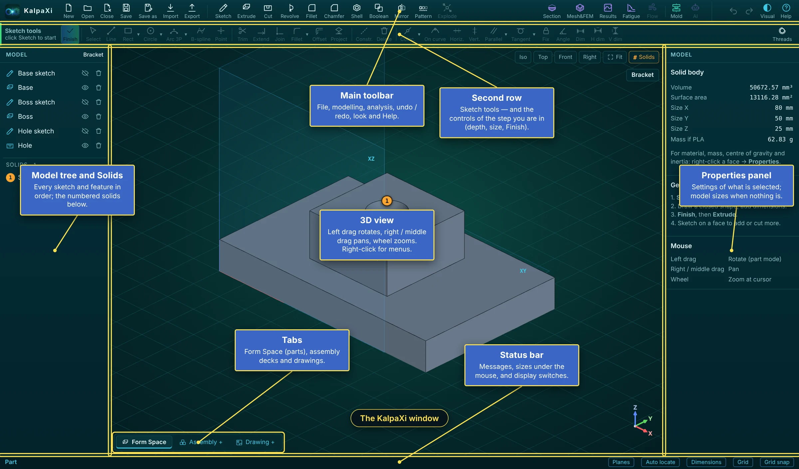
| Area | What it is for |
|---|---|
| Main toolbar (top) | Files on the left, the modelling tools in the middle, analysis, checks, undo / redo, the look and Help on the right — see The toolbar. |
| Second row | The sketch tools (they wake up when you sketch). During a step — depth, fillet, shell, section — it shows that step's controls and Finish. In an assembly deck or a drawing it holds their own tools. |
| Model tree and Solids (left) | Every sketch and feature in the order it was made, and the numbered solids below — see How a part is made. |
| 3D view (middle) | The model. Left-drag rotates, right / middle drag pans, the wheel zooms; right-click for the menus. |
| Properties panel (right) | The settings of what is selected. With nothing selected it shows the model's size and weight, a short Getting started and the Mouse buttons. Mesh & FEM, Results and Fatigue use it for their panels. |
| Tabs (bottom left) | Form Space (where solids are made), the assembly decks and the drawings. |
| Status bar (bottom) | Messages and hints for each step, the size of what is under the mouse, and the display switches. |
Moving around the 3D view
| Button (top-right of the view) | What it does |
|---|---|
| Iso Top Front Right | Jump to a standard view. |
| Fit or F | Zoom so the whole model fits on screen. |
| Project name (top right, under the buttons) | The name of the open project. |
| Grid (status bar, bottom right) | Show or hide the grid. Grid snap next to it turns snapping to the grid on or off while sketching. |
| Normal (sketch mode) | Look straight at the sketch plane. |
| Right-click a face or plane → Normal view | Look straight at that face (a curved face: square to it where you clicked); the screen's "up" stays as it was. |
| Visual (top right, next to Help) | Appearance of KalpaXi: Default (deep teal, matching the start-up picture — the standard look), Dark, Gray or Bright (panels, 3D view and sketch lines). Remembered next time. |
The buttons along the top, in three groups.
The toolbar: project, files and the screen
The toolbar has three groups: project and files at the left end (this section), the modelling tools in the middle and the analysis, checks and look at the right end.
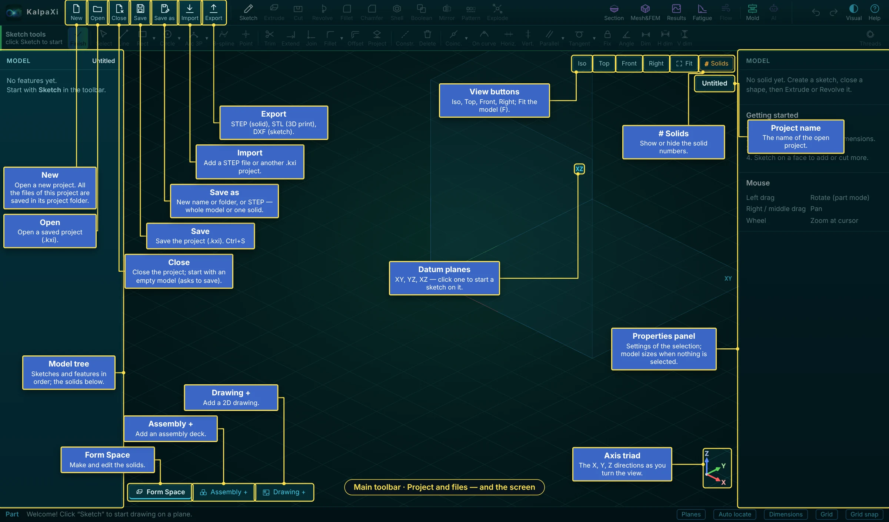
| Button | What it does |
|---|---|
| New | Starts a new project. All the files of a project (the .kxi file and its study folders) are kept in its own project folder. |
| Open | Opens a saved project (.kxi). |
| Close | Closes the project and starts with an empty model (asks to save first). |
| Save Ctrl+S | Saves the project. |
| Save as | A new name or folder, or a STEP file — of the whole model or of one solid. |
| Import | Adds a STEP file (as a solid) or another .kxi project. |
| Export | STEP (solid), STL (3D printing), DXF (a sketch). |
Around the model:
- View buttons (top right of the view): Iso Top Front Right and Fit (F); # Solids shows or hides the solid numbers. Under them, the project name.
- Datum planes XY, YZ, XZ — click one to start a sketch on it (Planes in the status bar shows or hides them).
- Axis triad (bottom right): the X, Y, Z directions as you turn the view.
- Tabs: Form Space (make and edit the solids), Assembly + (add an assembly deck), Drawing + (add a 2D drawing).
More about the save, open and export windows: Saving, opening, exporting.
The toolbar: modelling tools and the status bar
The middle of the toolbar holds the tools that make and change the solids. They work in the Form Space; while you sketch or are in a step they wait until you finish.
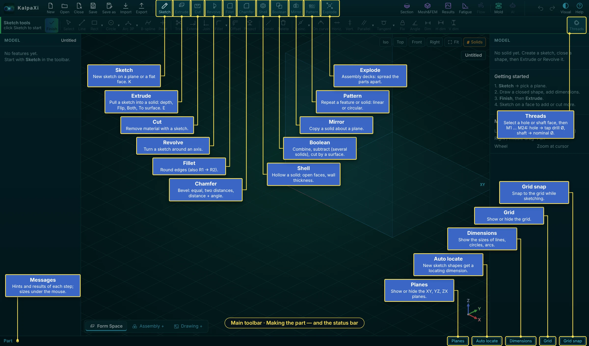
| Tool | What it does |
|---|---|
| Sketch K | A new sketch on a plane or a flat face — Making a sketch. |
| Extrude E · Cut | Pull a sketch into a solid, or remove material with it: depth, flip, both sides, up to a surface. |
| Revolve | Turn a sketch around an axis. |
| Fillet · Chamfer | Round edges (also R1 → R2 along an edge) · bevel edges (equal, two distances, distance + angle). |
| Shell | Hollow a solid: faces to open, wall thickness. |
| Boolean | Combine or subtract solids (several at once), or cut a solid by a surface. |
| Mirror · Pattern | Copy a solid about a plane · repeat a feature or solid in a row or a circle. |
| Explode | Assembly decks only: spread the parts apart. |
| Threads (right end of the second row) | Select a hole or a shaft face, then M1 … M24: a hole gets the tap drill Ø, a shaft the nominal Ø. |
How each tool is used: Making 3D geometry.
The status bar
| Item | What it does |
|---|---|
| Messages (left) | Hints and results of each step; the size of what is under the mouse (edge length, radius, face area). |
| Planes | Show or hide the XY, YZ, XZ planes. |
| Auto locate | Each new sketch shape gets a locating dimension. |
| Dimensions | Show the sizes of lines, circles and arcs in sketches. |
| Grid · Grid snap | Show the grid · snap to it while sketching. |
The toolbar: analysis, checks, undo, look and Help
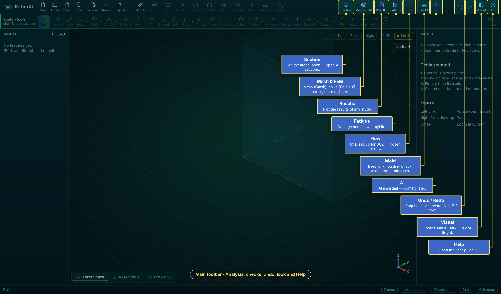
| Button | What it is for |
|---|---|
| Section | Cut the model open to look inside — up to 4 sections, in the model, the assembly decks and the results (Section view). |
| Mesh&FEM | Meshes a solid (Gmsh) and solves it (CalculiX): stress, thermal or thermal + stress, with supports, forces, pressures, gravity, temperatures, convection, heat flux, radiation and heat generation (Mesh & FEM). |
| Results | Plots the results of any study of the project — displacement, stresses, safety factor, temperature — and adds load cases together (Results). |
| Fatigue | Turns the stress studies into fatigue damage and life with pyLife (Fatigue). |
| Flow · AI | CFD set-up for SU2 and an AI assistant — built, frozen in this release (Flow and AI). |
| Mold | Injection-molding check: walls, draft, undercuts, ribs, gates (Molding check). |
| Undo / Redo | A step back or forward — Ctrl+Z / Ctrl+Y. |
| Visual | The look of KalpaXi: Default, Dark, Gray or Bright. |
| Help F1 | This guide. |
In short, the analysis chain is: Mesh&FEM sets up a study on a solid (or several solids of an assembly) — material, supports, loads, mesh — and runs CalculiX. Results shows any study that has run, also after the project is reopened, and can add several studies together with factors. Fatigue takes one or more of those stress studies as load cases, each with its load range, number of cycles and mean-stress model, and gives the damage and life at every node. Mold checks a solid against injection-molding rules and colours the part where a rule is not met. Each has its own chapter below.
From a sketch to a finished solid.
How a part is made
Every solid starts as a flat 2D drawing (a sketch) that is turned into 3D by a feature.
The left-hand Model list keeps the full history. Click a feature to change its values in the right-hand panel, double-click it to edit it; the part rebuilds automatically.
The left side: Model tree and Solids
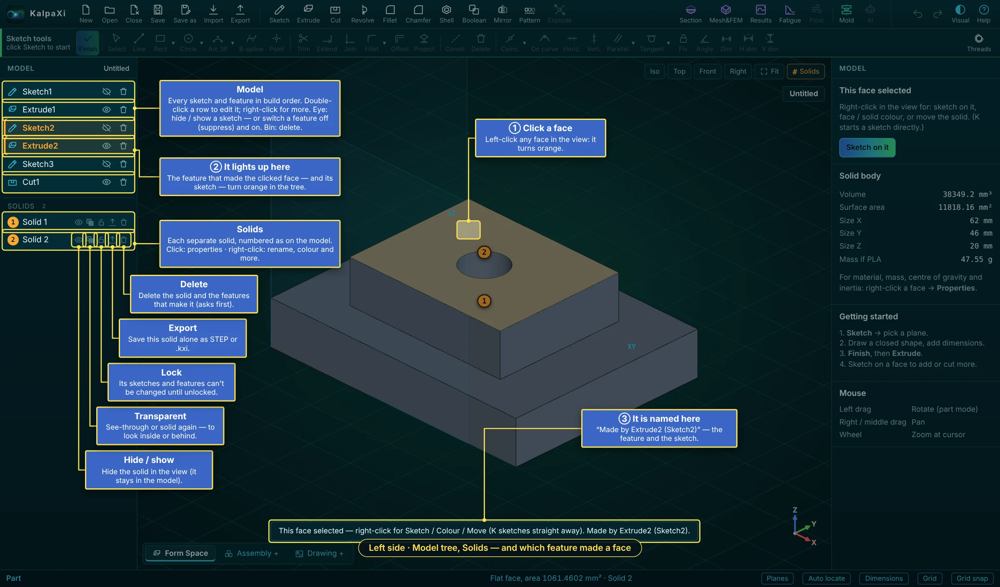
- Model lists every sketch and feature in build order. Click one: its settings open in the right panel. Double-click: edit it (a sketch opens, an extrude shows its depth handle). Right-click: more commands. The eye hides or shows a sketch, or switches a feature off (suppress) and on; the bin deletes it.
- Solids lists each separate solid with the number shown on the model. Click a solid for its properties; right-click it to rename, colour, lock and more. Its five buttons: hide / show, transparent, lock, export (that solid alone, STEP or
.kxi) and delete (with the features that make it, after asking) — see Solids: colour, name, lock.
Right-click on a face, the second row and the right panel
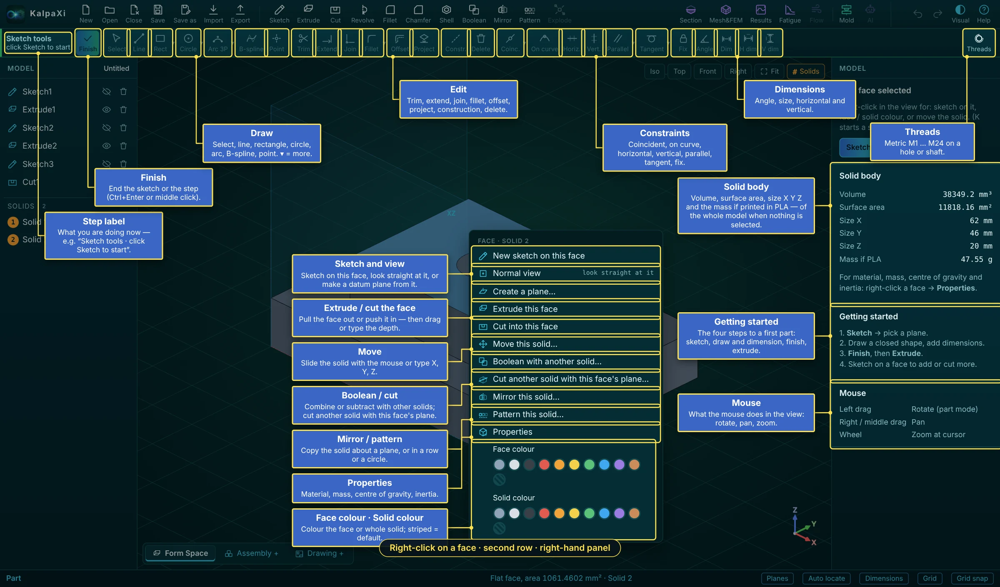
| Right-click a face | What it does |
|---|---|
| New sketch on this face · Normal view · Create a plane… | Sketch on the face, look straight at it, or make a datum plane from it. |
| Extrude this face · Cut into this face | Pull the face out or push it in — then drag or type the depth. |
| Move this solid… | Slide the solid with the mouse or type X, Y, Z. |
| Boolean with another solid… · Cut another solid with this face's plane… | Combine or subtract with other solids; cut another solid with the face's plane. |
| Mirror this solid… · Pattern this solid… | Copy the solid about a plane, or in a row or a circle. |
| Properties | Material, manufacturing method, mass, centre of gravity, inertia (Mass properties). |
| Face colour · Solid colour | Colour the face or the whole solid; the striped swatch = back to the default. |
The second row holds the sketch tools. They wake up in a sketch: on the left the step label (what you are doing now) and Finish, then the Draw, Edit, Constraints and Dimensions groups — each described in the sections below. A ▾ next to a button opens more tools of that kind. Threads sits at the right end and works outside a sketch.
The right panel, with nothing selected, shows: Solid body — the volume, surface area, size in X, Y, Z and the mass if it were printed in PLA (of the whole model); Getting started — the four steps to a first part (sketch, draw and dimension, finish, extrude); and Mouse — what the buttons do in the view. When something is selected it shows that item's settings instead.
Making a sketch
Start a sketch
- Click Sketch in the toolbar (or press K).
- Click one of the three origin planes — XY (top), XZ (front), YZ (right) — or a flat face of the solid. The buttons in the right panel pick a plane too.
- A grid appears on the plane and the Line tool is ready. The view stays as it was — press Normal (top right) to look straight at the plane. The sketch tools are in the second bar under the main toolbar (always there, frozen until you sketch), with the sketch's name and plane on the left and Finish at both ends. The main toolbar stays in view but is locked until you finish — only Help and Visual still work.
Drawing tools
| Tool | Key | How to draw |
|---|---|---|
| Line | L | Click a start point, then each next point. Keeps going as a chain; Esc or right-click ends it. Clicking the first point closes the shape. |
| Rectangle | R | Click two opposite corners. |
| Circle | C | Click the centre, then a point on the rim. |
| Circle 3P | Click three points on the circle. | |
| Arc 3P | A | Click the start, the end, then a point the arc passes through. |
| Arc Ctr | Click the centre, the start (sets the radius), then the end (anticlockwise). | |
| B-spline | B | Click control points; Enter, double-click or right-click to finish. Click the first point again to close it. |
| Point | P | A single point, handy for dimensions and constraints. |
Helpers while drawing
- Snapping — the cursor jumps to existing points (they join), onto lines/circles (the point stays on them) and to the grid. Turn grid snapping off with Grid snap in the status bar.
- Horizontal / vertical — a line drawn within 3° of level or upright snaps straight and gets an H or V marker.
- Closed shapes are shaded blue — only shaded areas become solid.
- Construction lines (G on selected curves) are dashed helpers that don't become solid — useful as a revolve axis or a reference.
Finish
Click Finish (at either end of the sketch bar), click the middle mouse button, press Ctrl+Enter, or right-click → Finish sketch. The sketch tools freeze again and the main toolbar works. To change a sketch later, double-click it in the Model list. The eye button in the list hides or shows a sketch (or switches a feature off); the bin deletes it.
Editing a sketch
| Action | How |
|---|---|
| Select | S, then click; Shift+click adds to the selection. |
| Move | Drag a point, a line or a circle's rim. Constraints and locked dimensions are kept while you drag. |
| Join points | Drag a point onto another point (they become one) or onto a line/circle (it stays on it). |
| Delete | Select and press Del. |
| Trim X | Click the piece of a curve to cut away; it is removed up to the nearest crossings (shown red first). |
| Extend W | Click near the end of a line/arc; it stretches to the next curve it would hit. |
| Join corner J | Click two curves; both are extended or trimmed to meet in a sharp corner. |
| Project U | Copies an edge of the solid (or a curve of another sketch) into this sketch as fixed geometry. |
| Undo / Redo | Ctrl+Z / Ctrl+Y |
Constraints
Constraints are rules the sketch must obey. Select the items first, then click the button (or press the key).
| Constraint | Key | Select |
|---|---|---|
| Coincident | Two points (they become one) | |
| On curve | O | A point and a line/circle/arc |
| Horizontal / Vertical | H / V | Lines (or two points) |
| Parallel / Perpendicular | Two lines | |
| Tangent | T | A line and a circle/arc, or two circles/arcs |
| Equal | E | Two or more lines, or circles/arcs |
| Fix | Points or curves to pin in place |
The status bar shows how many degrees of freedom are left. At 0 the sketch turns green — fully constrained. A constraint that would contradict the others is refused, so the sketch never breaks.
Dimensions
Sizes are shown automatically
Every line shows its length, every circle its diameter (Ø) and every arc its radius (R). These are unlocked 25 🔓 — they follow the shape as you drag it.
Change a size
- Double-click the number.
- Type the new value and press Enter. Simple maths works too, e.g.
25.4*2. - The shape resizes to match.
Lock a size
Click the small lock icon on the label. A locked dimension 25 🔒 is enforced: dragging can't change it and it can't be edited until you click the lock again to unlock it.
Dimension tools
| Tool | Key | Pick |
|---|---|---|
| Dim | D | A line → its length; a circle → diameter; an arc → radius; two points, a point and a line, or two parallel lines → the distance between them; two lines → the angle. |
| H dim | Shift+H | Distance measured horizontally: one line → its width; two items → their horizontal spacing. |
| V dim | Shift+V | Distance measured vertically: one line → its height; two items → their vertical spacing. |
| Angle | N | One line → its angle from horizontal; two lines → the angle between them. |
With nothing selected, press the key (or button) and then click the items. Click the first item and then empty space to dimension a single line. With items already selected, the key applies straight away.
Making 3D geometry
| Feature | What it does | Settings (right panel) |
|---|---|---|
| Extrude E | Pushes the closed shapes of a sketch into a solid. | Sketch, distance, direction (along the normal / reversed / both sides), operation: Add (join), New solid (separate), Cut, Intersect. |
| Cut | Same as Extrude but removes material (starts reversed, into the solid). | As Extrude. |
| Revolve | Spins a shape around an axis (a pulley, a cup…). | Axis: the sketch's horizontal or vertical axis, or any line in the sketch (a construction line is ideal); angle (360 = full turn). |
| Fillet | Rounds edges. | Radius — typed, or hold the left button and drag away from an edge. Click edges to add / remove them, then Done. Variable radius: R1 and R2 at the two ends of one edge (below). |
| Chamfer | Bevels edges. | Type: Equal distance, Two distances (D1 × D2) or Distance + angle; sizes typed or dragged (below). |
| Shell | Hollows the solid, leaving walls, with the faces you pick left open. | Wall thickness — typed or dragged; faces to open (below). |
| Create a plane | Right-click a flat or curved face → Create a plane…: a reference plane to sketch on. | Turn it about an axis by dragging, align to X / Y / Z, set an angle, or click a straight edge as the axis. |
| Extrude / Cut this face | Right-click a flat face: pulls it out 10 mm or pushes it in 5 mm. | Distance, direction. |
| Move solid | Right-click a face → Move this solid…, then drag it with the left button (see below). | Move X / Y / Z (mm) in the bar; rotation about X, Y or Z in the panel afterwards. |
| Boolean | Combines solids into one, subtracts solids from another, or cuts a solid in two along a plane or a sketched line. The result is a new solid with a new number. | Combine / Subtract / Cut by surface, the solids, the cutting plane or line, keep or delete each original (see below). |
| Import | Brings in a STEP file as a solid. | Add / new solid / cut / intersect. |
Extrude both ways, or up to a surface
- Both (in the depth bar or the extrude's panel): the shape goes out on both sides of the sketch; Depth 2 sets the other side's depth (empty = the same as Depth).
- To surface: click the face the extrude (or cut) should run up to. A flat face is used as its whole plane, a curved face as it is. The panel shows Extends to with the face; Change… picks another face, Distance goes back to a typed depth.
- From a sketch on a solid's face the extrude asks: Join Solid N, New separate solid or Join to another solid… (click it). If the new shape does not touch the solid it should join, KalpaXi warns “two solids are formed due to non continuity”.
Threads (ISO metric M1 – M24)
- Click the round face of a hole or a shaft (outside a sketch).
- Threads (right end of the second row). The window lists M1 … M24 with pitch, tap drill Ø and nominal Ø (second-choice sizes marked 2nd).
- Pick a size. A hole is made the size's tap drill Ø (ISO 2306); a shaft is turned down to the nominal Ø (ISO 261). Sizes that don't fit (bigger than the shaft) are marked infeasible.
The thread is a feature in the tree: click it to change the size. Drawings show it with the thread callout and cosmetic thread lines.
Boolean: Combine and Subtract solids
With Add (join) a new extrude melts into every solid it touches. To keep it apart — so it can later be combined with, or subtracted from, another solid — set its operation to New solid (separate): it becomes its own solid with the next number, even where it overlaps another one.
- Click Boolean in the toolbar (or right-click a face → Boolean with another solid…, which pre-selects that face's solid; or right-click empty space → Boolean (Combine / Subtract)…). Combine and Subtract need two solids; with one solid only Cut by surface (below) is offered.
- Choose Combine (A + B: one solid made of both) or Subtract (A − B: Solid A with Solid B's volume removed).
- Pick the two solids by number.
- Under Originals, tick Keep Solid A and/or Keep Solid B to keep the original solids as they were. Unticked originals are deleted (used up). The window shows the result before you press OK, e.g. “Result: Solid 3 = Solid 1 − Solid 2”.
- The result always gets a new number (the next free one); kept originals keep theirs. Numbers stay put when you rebuild, save and reopen.
- A kept original that overlaps the result (A after a Subtract, A and B after a Combine) is hidden so it doesn't show through the result; show it again with its eye button in the Solids list.
- The Boolean is a feature in the tree like any other: click it to switch between Combine and Subtract, change Keep A / Keep B, Swap A and B, suppress or delete it.
- Combine needs the solids to touch or overlap (otherwise they can't become one solid); Subtract needs B to overlap A. If Subtract cuts A into pieces, each piece is a new solid.
- After a Boolean (or a New solid), later features work solid by solid: an Add extrude joins only the solids it touches, a Move moves one solid without merging it into others, a fillet rounds the picked edges on each solid that has them.
Boolean: Cut by surface (with a plane or a line)
Splits one solid into two pieces along a flat plane, or along a line (or a chain of lines) drawn in a sketch — like sawing the part. It works with a single solid, so the Boolean button is available as soon as there is one solid.
- Make the cutter (if you don't use a main plane):
- Plane: the main planes XY, XZ, YZ are always offered; for any other position right-click a face → Create a plane… (a datum plane, also offset or turned).
- Line: make a sketch on a plane that crosses the part and draw one open line or a chain of joined lines (an L, a zig-zag) right across it. Closed outlines, branches and construction lines are not used. The line is extended at both ends, then swept along the sketch's normal through the whole part.
- Click Boolean → Cut by surface. Or right-click a plane → Cut a solid with this plane…, or right-click a flat face → Cut another solid with this face's plane… (the cutter is then filled in).
- Pick Solid A (the solid to cut) and Cut with (XY, XZ, YZ, your datum planes, and the sketches with an open line chain).
- Keep: Both pieces (two new solids), Side 1 only (the side the plane's normal points to, or the left of the line as it was drawn — from its first to its last point) or Side 2 only.
- Under Originals, tick Keep Solid A to keep the uncut solid as well (it is hidden so it doesn't show through), then OK.
- Each piece is a new solid with the next free number. The Cut by surface feature stays in the tree: click it to change Cut with, Keep or Keep original; move or edit the plane or the sketch and the cut follows.
- "The cutting surface doesn't pass through the solid" — move the plane or the line so it crosses the part. "… must form one open chain" — the sketch has a closed shape or a branch; draw a single open line chain.
Shell
- Click Shell in the toolbar.
- Click the faces to open (they turn orange); click one again to keep it closed.
- Hold the left button and drag from a face: the wall thickness follows the cursor and the hollowed solid shows while you drag — or type the Thickness in the bar. Walls go inwards.
- Done (either end of the bar, Enter or a middle click) — or Cancel (Esc).
Chamfer options
- Equal distance — the same distance D on both faces.
- Two distances — D1 on the face shown orange, D2 on the other; Flip swaps the faces. Dragging from the edge sets D1 and D2 separately.
- Distance + angle — D on the orange face and the bevel angle (between 0° and 90°).
Variable-radius fillet
In the fillet bar tick Variable radius: the fillet goes from R1 at one end of the edge to R2 at the other (labels show which end is which). Only one line or curve can be picked; picking another one replaces it. Type R1 and R2, or drag near an end to set that end's radius.
Setting the depth with the mouse
After Extrude or Cut (or right-click a face → Extrude this face / Cut into this face) a bar opens under the main toolbar and the new shape is shown see-through (blue for an extrude, red for a cut). Hold the left button and move the mouse: the depth follows the cursor along the sketch's normal, and stops following when you let go. Type an exact Depth in the bar, Flip it to the other side, then Finish (Enter) — or Cancel (Esc). The main toolbar is locked until then. Turn the view with the right button, pan with the middle one; a middle click = Finish. Later: double-click the feature (or Drag depth in its panel) to drag it again.
Sketch on a solid's face: join, new solid, or which solid to cut
- Extrude from a sketch on a face of Solid N asks: Join to Solid N (it grows and keeps its number) or New separate solid (its own number).
- Cut from a sketch on a face of Solid N asks: Cut Solid N (only that solid is cut, even where the cut passes through others) or Pick another solid to cut… — then click the solid to cut.
- An extrude from a sketch that is not on a solid's face makes a separate solid. Solids that overlap are never merged automatically — not by an extrude and not by a move; use Boolean → Combine to merge them.
Moving a solid with the mouse
Right-click a face → Move this solid…. The solid gets an orange see-through copy; hold the left button and drag it. It slides in the main plane (XY, XZ or YZ) that is most square to your view — from the Top view it moves in XY, from the Front view in XZ; turn the view (right button) to move it in another plane. Steps are 0.5 mm; exact X / Y / Z values can be typed in the bar. Finish (Enter) or Cancel (Esc).
Sizes under the mouse
Move the mouse over the model and the status bar (bottom) shows the size of what is under it: an edge — line length, or circle / arc radius, diameter and length; a curved face — cylinder / cone / sphere radius and area; a flat face — its area. In a sketch it shows the length of a line, the radius of a circle or arc (with arc length and angle), and the length of a curve.
Example: a plate with a hole
- Sketch → click XY.
- R: click two corners for a rectangle. C: draw a circle inside it.
- Double-click the rectangle's sizes and type
60and40; double-click the circle's Ø and type10. Lock them if you want them fixed. - Finish, then Extrude; set the distance to
5. The circle becomes a hole automatically. - Click a top edge, right-click → Fillet, set the radius, press Enter.
Solids: colour, name, lock
Every separate solid is listed under Solids below the feature tree, with its number. Each row has five buttons:
| Button | What it does |
|---|---|
| Eye | Hide / show the solid. |
| Two squares | Transparent / opaque. |
| Padlock | Lock / unlock (below). |
| Arrow | Save as / Export this solid. |
| Bin | Delete the solid and the features that build it. |
- Colour: right-click a face → Solid colour colours only the solid that face belongs to; the other solids keep theirs. Face colour colours just that face and shows over the solid's colour. The number badge in the list takes the solid's colour.
- Rename: right-click a solid in the list → Rename… (or double-click its name), type, Enter (Esc cancels). The number never changes; menus show it as “Solid 1 · Bracket”.
- Lock: while a solid is locked, its sketches can't be opened and the features that build it can't be edited, switched off or deleted, and the solid can't be deleted. Locked items show a small padlock in the tree and their panel is greyed out (the name stays editable). Unlock with the same button or the right-click menu. The lock covers the features that existed when you locked it.
The name, colour and lock are saved with the project.
Putting parts together, looking inside, weighing them, and drawing them.
Assembly: decks, joints, constraints
A project has tabs at the bottom left of the 3D view, like sheets in a spreadsheet. Form Space is where solids are made and edited. Assembly + adds an Assembly Deck (up to 2: Assembly Deck-1 and -2) where solids from the Form Space are put together. Drawing + adds a drawing sheet. Click a tab to switch; right-click a deck tab to rename or delete it.
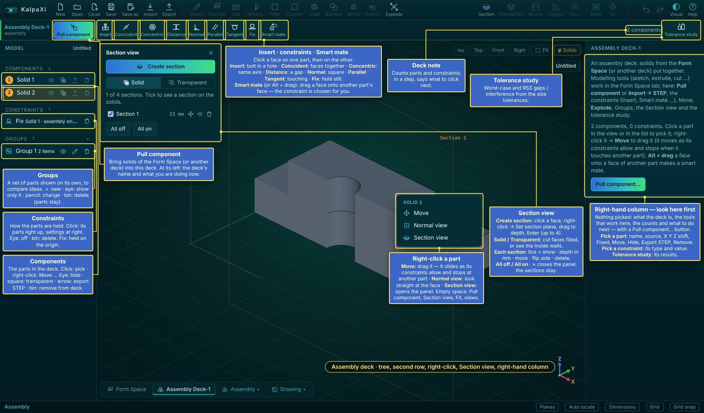
What you see in a deck
| Where | What it is |
|---|---|
| Components (left) | Every part in the deck, numbered as in the Form Space. Click: pick it · right-click: Move and more. Buttons: eye hide / show · square transparent · arrow export STEP in its deck position · bin remove from the deck (the solid stays in the Form Space). |
| Constraints (left) | How the parts are held. Click one: its two parts light up and its settings show on the right. Eye: switch off (kept, not solved) · bin: delete. “Fix Solid 1 · assembly origin”: the first part is held on the origin. |
| Groups (left) | A chosen set of parts shown on its own — to compare ideas or look at a sub-group. ＋: new group (name, tick the parts) · click or eye: show only this group (again: show all) · pencil: change name or parts · bin: delete the group (the parts stay). |
| Pull component | Brings solids of the Form Space — or a whole other deck, as a sub-assembly — into the deck. On its left: the deck's name and what you are doing now. |
| Insert | A bolt in a hole in one go: click the round face of the part going in (near its head), then the hole — same axis, head flush. |
| Constraint buttons | Coincident, Concentric, Distance, Normal, Parallel, Tangent, Fix — click a face on one part, then on the other (below). |
| Smart mate | Drag a face of one part onto a face of another: the constraint is chosen for you (flat on flat: coincident, round on round: concentric, round on flat: tangent). Alt + drag does it at any time. |
| Deck note · Tolerance study | The count of parts and constraints (during a step: what to click next) · gaps and interference from the size tolerances (below). |
| Explode (main toolbar) | Spreads the parts apart with explode lines; Spread in the second row sets how far. Press again to collapse. A drawing of the deck can show this as an exploded view. |
| Right-click a part | Move — drag it; it slides only as its constraints allow and stops when it touches another part · Normal view — look straight at that face · Section view — opens the panel. On empty space: Pull component, Section view, Fit, Iso / Top / Front. |
| Right-hand column | Look here first. With nothing picked it explains the deck: what it is, which tools work here, how many parts and constraints there are, and what to do next — with a Pull component… button. Pick a part: its name, where it comes from, its X Y Z shift, Fixed, Move, Hide, Export STEP, Remove from deck. Pick a constraint: its type and value. After a tolerance study its results are shown here. |
How to build an assembly — step by step
- Model the parts in the Form Space, each as its own solid (extrude with New solid (separate), or import STEP). Give them names (right-click in the Solids list → Rename…) — the names appear in the deck, the parts list and the tolerance study.
- Click Assembly + at the bottom left. An empty Assembly Deck-1 opens and the second bar becomes the assembly bar.
- Pull component → tick the solids and how many of each → Pull. The first part pulled in is fixed on the assembly's coordinate system; the others are free.
- Place the parts with constraints (face to face rules, several per part, below): click the constraint button, click a face of the part that moves, then the matching face of the part it goes to. Insert puts a bolt in a hole in one go; Smart mate (or Alt + drag) picks the constraint for you.
- Check each part's panel: it shows how many degrees of freedom are left (0 = fully placed). Drag a part with Move (right-click it) to see how it can still move.
- Optional: Tolerance study (right end of the bar) for the gaps and interference between parts from their tolerances (below), Section to look inside, and a Drawing + of the deck with a parts list.
- Save — the decks, their parts, joints and constraints are saved in the
.kxiproject.
In a deck
- Sketch, Extrude, Cut, the other modelling tools and the analysis tools (Mesh&FEM, Results, Fatigue, Mold) are greyed out — they work in the Form Space. The file menu and the Section view work.
- The second bar holds Pull component, Insert, the constraint buttons (Coincident … Fix), Smart mate and Tolerance study; Explode is in the main toolbar.
- The Model list shows the Components pulled in, the Constraints and the Groups (and Joints from older files).
Pull component
- Pull component opens a window with two choices: Pull component (the solids of the Form Space) or Pull assembly (the other deck, pulled in as a whole).
- Tick what to bring in and set × how many; the same solid can be pulled in several times.
- Pull. The solids keep their names; copies are numbered, e.g. “Bracket <1>”, “Bracket <2>”.
A pulled solid first sits where it is in the Form Space; copies, and anything that would overlap, go to its right. Changes made in the Form Space (shape, colour) show in the decks. A deck can't be pulled into a deck it is already part of.
Components
- Each row: show / hide, transparent, export (a STEP file of the part as it sits in the deck) and remove (the solid stays in the Form Space).
- Click a part in the view or the list to pick it; Del removes it. Its panel shows where it comes from and its position (X / Y / Z shift), which you can type unless a joint places it.
- Right-click a part in the view: Move, Normal view, Section view.
Joints (older files)
New decks use constraints; joint buttons are no longer in the bar. Joints in projects made with an earlier release still work as described here — delete them to replace them by constraints. A joint places one part (the moving part) on another (the base part) and then lets it move only as the joint allows.
- Click a joint button.
- Click the part that moves — on the face the joint uses.
- Click the base part — on the matching face. The moving part snaps into place.
| Joint | Pick | After placing | Drag (Move) |
|---|---|---|---|
| Fixed | any point on each part | locked where it is | can't move |
| Mate | a flat face on each | faces flush, the clicked spots together | slides over the face, no turning |
| Revolute | a round face (its axis) or a flat face (its normal) | axes lined up | turns about the axis |
| Slider | as Revolute | axes lined up | slides along the axis |
| Cylindrical | as Revolute | axes lined up | slides; Shift-drag turns |
| Planar | a flat face on each | faces flush, the clicked spots together | slides; Shift-drag turns |
| Ball | a point on each (a round face gives a point on its axis) | the two points together | turns any way about the point |
- Move (right-click the part, or the button in its panel): hold the left button and drag. A part held by a joint moves only within that joint; parts joined to it move along. A part with no joint moves parallel to the screen. Done (Enter or a middle click) keeps it, Esc cancels; one Undo step per move.
- Click a joint in the Joints list for its panel: the values (angle, slide, X / Y) to type, and limits — min / max angle, min / max slide (empty = free). Dragging stops at a limit, and a typed value beyond a limit is held at it.
- A part can be placed by one joint only, and joints can't chain back round to the part itself. Deleting a joint leaves the part where it is, free again; removing a part removes its joints.
- Parts may overlap — there is no collision check while moving (the Tolerance study reports interference).
Constraints (face to face)
Constraints place a part by rules between its faces and the faces of other parts, like in most CAD programs. A part can have several constraints; each one removes some of its 6 degrees of freedom (3 shifts, 3 turns).
| Constraint | Pick (moving part first, then the other part) | Result |
|---|---|---|
| Coincident | Two flat faces; two round faces; a cylinder / sphere and a flat face | Flat faces against each other (tick Faces turned the same way (aligned) to make them face the same way, flush); round faces on one axis |
| Concentric | Two round faces (cylinders, cones) or two spheres | On one axis / one centre — a pin in a hole |
| Distance | Flat faces, axes, or an axis / sphere and a face | At the gap you type (mm) — On the other side of the face flips it |
| Normal | Faces or axes | Square to each other (an axis normal to a flat face) |
| Parallel | Faces or axes | Parallel |
| Tangent | A cylinder / sphere and a flat face, or two cylinders / spheres | Touching (Inside (one in the other) for a shaft in a bore) |
| Fix | Click one part | Held where it is in all 6 directions: constraints and Move never move it. The first part pulled in is fixed automatically. Free it with the Remove the Fix button in its row, or untick Fixed (Fix) in the part's panel. |
- Click a constraint in the Constraints list for its panel: the distance, the flip / side options, Switched off, Delete (the parts stay where they are).
- A constraint that can't be met together with the others is marked ⚠ with how far off it is — change it or delete a conflicting one; the others are still met.
- Typical: a bolt in a plate = Concentric (shank in the hole) + Coincident (head face on the plate face) → 1 freedom left (turning about the axis), which is fine.
Tolerance study (gaps and interference)
Checks whether the parts still fit when every size is at the end of its tolerance. The tolerance of each size comes from the part's drawing (a dimension with its own tolerance) or, otherwise, from the general tolerance of its Manufacturing method and Manufacturing tolerance (right-click a face of the solid → Properties; e.g. machining to ISO 2768-1 m, sheet metal to ISO 20457, molding, casting).
- Set the Manufacturing method and Manufacturing tolerance of each solid (Properties), and/or put toleranced dimensions on its drawing.
- In the deck, click Tolerance study. The window lists every size of every part with its nominal, min, max and where its tolerance comes from (drawing / general / — none).
- Run study. KalpaXi rebuilds the parts many times — nominal, each size moved to a limit, then the tightest and loosest fit of every pair of nearby parts — and measures them in 3D with the joints and constraints kept.
- The right panel shows, for each pair of parts: Nominal, Tightest fit and Loosest fit (gap, contact or interference with its depth and X/Y/Z size), the statistical (RSS) mean, σ and chance of a clash, and which sizes drive the gap (in %). Export CSV, Run again after changes, Clear.
Section view
Click Section (top right, left of Mesh) to open the Section view panel at the top left of the 3D view. You can have up to 4 sections; tick each one's check box to see it on the solids.
Create a section
- Create section.
- Left-click a face of the model (flat or curved) or a reference plane (XY, XZ, YZ or your own).
- Right-click → Set section plane.
- Hold the left button and drag: the section plane moves through the model and the part in front of it disappears. Let go to set it there — or type the Depth in the bar. Flip cuts away the other side.
- Done (Enter or a middle click) keeps it; Cancel (Esc).
In the panel
- Solid / Transparent switch: Solid mode fills the cut faces, so the solids look solid inside; Transparent mode shows the inside walls instead.
- Cut faces take each solid's own colour, a little lighter, so they stand out from the outside surfaces (a very light solid gets a slightly darker cut face instead).
- Per section: check box (on / off), depth, Move (drag it again), Flip, Delete. All on / All off.
- With 4 sections, Create section is switched off until you delete one.
- A section plane runs through the whole model, so it cuts every solid it crosses. Several sections together cut away all their parts at once.
- Sections are saved with the project. Each assembly deck has its own sections.
Mass properties
Right-click any face of a solid → Properties. A window opens over the 3D view (drag it by its title bar, close with ✕ or Esc) showing, for the solid that face belongs to:
| Item | Notes |
|---|---|
| Manufacturing method, Manufacturing tolerance | How the solid is made (machining, sheet metal, molding, casting …) and its general tolerance class. Used for the general tolerances on its drawing and in the assembly tolerance study. |
| Material | Pick from the list (Aluminum, Stainless Steel, Copper, Brass, PC, ABS, Silicone rubber, PP, Nylon, Acrylic). Its density is used for every mass value. Each solid remembers its own material, and it is saved in the project. |
| Volume, Surface area | mm³, mm² |
| Mass | g (and kg) — needs a material. |
| Centroid | Centre of gravity X, Y, Z in mm. |
| Moments & products of inertia | g·mm², at the centroid (L…) and about the model origin (I…). Products use the positive convention ∫xy dm. |
| Principal moments & directions | Px ≤ Py ≤ Pz with their axis directions, at the centroid. |
| Radii of gyration | mm, about the centroid axes and the principal axes. |
| Bounding box | Min / max corner and size. |
The window updates automatically when the model changes. The ⧉ button copies everything as text.
Drawing
A drawing is a 2D manufacturing sheet (ISO 7200 title block) of one component or one assembly deck, with projected views, sections, details, dimensions with tolerances, notes, weld symbols and a bill of material. A project can have up to 8 drawings. Views are made from the exact solid (OpenCascade hidden-line projection) and follow every change to the model.
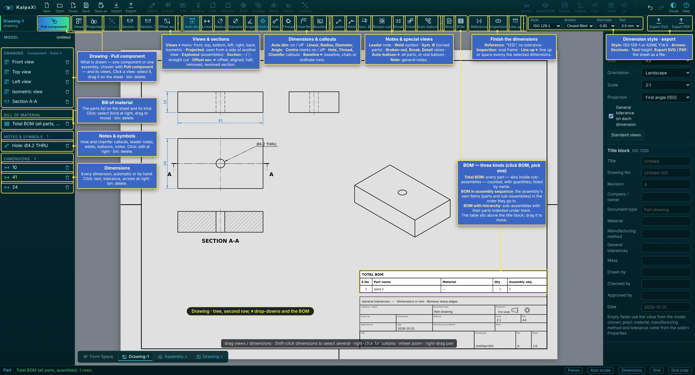
The left side
- Drawing — what is drawn (one component or one assembly, chosen with Pull component) and its views. Click a view to select it and drag it on the sheet; the bin deletes it.
- Bill of material — the parts list on the sheet and its kind; click to change it or drag it.
- Notes & symbols — hole and chamfer callouts, leader notes, welds, balloons, notes; click to edit in the right panel.
- Dimensions — every dimension, automatic or by hand; click for its text, tolerance and arrows.
The drawing bar
| Group | Tools |
|---|---|
| Views & sections | Views ▾ (front, top, bottom, left, right, back, isometric) · Projected (seen from a side of another view) · Exploded (assemblies) · Section ─ / Section │ (straight cut) · Offset sec. ▾: offset (stepped), aligned, half, removed and revolved sections. |
| Dimensions & callouts | Auto dim (on / off: the automatic dimensions; those placed by hand stay) · Linear, Radius, Diameter, Angle · Centre marks on / off · Hole, Thread, Chamfer callouts read from the model · Baseline ▾: baseline, chain or ordinate runs. |
| Notes & special views | Leader · Weld · Sym. Ø (Ø to a centre line, turned parts) · Broken-out (local section) · Break (long views shortened, true sizes kept) · Detail · Auto-balloon ▾ (all parts, or one balloon) · Note · BOM. |
| Finish the dimensions | Reference “(25)”, no tolerance · Inspection (oval frame) · Line up ▾: line up or space evenly the selected dimensions. |
| Style · export | Style ISO 129-1 or ASME Y14.5 · Arrows · Decimals · Text height · Export SVG / Export PDF. |
How to make a drawing — step by step
- Click Drawing + at the bottom left. A new tab Drawing-1 opens with an empty A3 sheet; the second bar becomes the drawing bar.
- Pull component → choose a component (a solid of the Form Space) or an assembly (a deck). The front, top, side and isometric views are laid out on the sheet at a standard scale that fits.
- With nothing selected, the right panel holds the Sheet settings: size A4 … A0, landscape / portrait, scale, projection (First angle — ISO / Third angle — ASME) and the title block (title, drawing no., revision, material, mass, drawn / checked / approved by, date, company …). Standard views puts the views back in their places.
- Add more views: Views (front, top, bottom, left, right, back, isometric), Section ─ / Section │ and Detail (below).
- Dimension the views (below) and set their tolerances.
- Add Note, Leader, Weld symbols and, for an assembly, the BOM.
- Export PDF (prints at real size — choose “Save as PDF”) or Export SVG (real size in mm, for other CAD / documents).
Views, sections and details
| Tool | How |
|---|---|
| Views | Pick a direction. Projected views keep in line with the front view (first or third angle). Right-click a view → Show / Hide hidden lines (dashed). |
| Section ─ Section │ | Click in a front, top, side, bottom or back view where the cut goes (snaps to hole centres and corners). A section view A–A is placed next to it with hatched cut faces and the cutting line with arrows on the parent view. Right-click it → Flip the looking direction. |
| Detail | Click the centre of the circle in a base or section view, then its size. The area is shown enlarged as DETAIL B (5:1) (letter on the circle); change its Detail scale and Circle radius in the panel. |
Dimensions
| Tool | Pick |
|---|---|
| Linear | Two points (corners, ends, centres), then place: horizontal or vertical by where you move the mouse. |
| Aligned | Two points: the true distance, parallel to them. |
| Radius / Diameter | An arc or circle, then place the text (R… / Ø…). |
| Angle | Two straight edges, then place the arc. |
- Style (in the bar): ISO 129-1 (text along and above the line) or ASME Y14.5 (text horizontal in a gap); arrowheads closed filled / open / oblique tick / dot; decimals; text height 2.5 – 7 mm.
- Move: drag the text to move it; drag the line or arrows to move the dimension line. Right-click → Arrows inside (pointing out) / Arrows outside (pointing in) / automatic, Text back in place.
- Text / tolerance… (right-click, or the panel): Text —
<>stands for the measured value, so4× <> THRUgives “4× Ø6 THRU”. Tolerance: General (from the solid) — from the solid's Manufacturing method / tolerance (e.g. ISO 2768-m ±0.1; the Feature choice picks the right table, e.g. across a bend, broken edge); Own tolerance — e.g.±0.05,H7,+0.02/0; or None. - Model value: which size in the model the dimension stands for — its own tolerance is then used for that size in the assembly tolerance study.
Notes, leaders, weld symbols
- Note — general notes, one per line, numbered 1, 2, 3 … on the sheet, placed above the parts list (or the title block). Drag to move; right-click → Put back above the parts list.
- Leader — click where the arrow points (on an edge: arrowhead; inside a face: dot), then where the text goes, and type the note. Drag the tip or the text to change it.
- Weld — ISO 2553 / AWS A2.4 symbol: click the joint, then where the reference line starts. In the panel: weld type (fillet, square / V / bevel / U / J butt, plug / slot, spot, seam), Arrow side / Other side / Both sides, sizes (
a5,z7,s4), length (100or3×50 (100)), Site (field) weld and the Tail (process, e.g. ISO 4063111,135,141).
Bill of material (parts list)
BOM on an assembly drawing puts a parts list above the title block. Click BOM and pick one of the three kinds:
- Total BOM — every solid part, also inside sub-assemblies, counted; listed by name.
- BOM in assembly sequence — the assembly's own items in the order they go in (sub-assemblies as one item).
- BOM with hierarchy — parts and sub-assemblies, with the parts of each sub-assembly indented under it.
Columns: S.No, Part name, Material, Qty, Assembly seq. Click the list to change its type, Export CSV, move it back Above title block or delete it.
Stress and heat, results, fatigue and the molding check.
Mesh & FEM — stress and thermal analysis
KalpaXi checks solids for stress, deflection and temperature with the finite-element method. The mesh is made by Gmsh (second-order 10-node tetrahedra, CalculiX type C3D10, or first-order 4-node tetrahedra, C3D4) and the analysis is solved by CalculiX. Both run on your own computer through a small helper program, the solver bridge.
A study holds everything one analysis needs: the solids and their materials, the mesh settings, the supports, the loads and its own folder. What to define, in order: analysis type → solids and materials → mesh → supports → loads → run.
One-time setup
- Install CalculiX and Gmsh. If FreeCAD is installed you already have both — they are in FreeCAD's
binfolder and the bridge finds them automatically.
Windows: download the CalculiX Windows build (ccx, e.g. from calculix.de or the bConverged package) and Gmsh from gmsh.info.
Linux (Ubuntu/Debian):sudo apt install calculix-ccx gmsh
macOS:brew install gmshand a CalculiX build (e.g.brew install calculix-ccxfrom a community tap). - Start the solver bridge in a second terminal, in the kalpaxi folder:
npm run solver(on Windows you can just double-clickstart-solver.bat). It prints where it found CalculiX and Gmsh and the folder where projects are stored (default: aKalpaXifolder in your home folder). Keep that window open. - If a program is not found, copy
bridge/config.example.jsontobridge/config.jsonand put in the full paths ofccxandgmsh(and the project folder you want).
Start a study, materials and the mesh
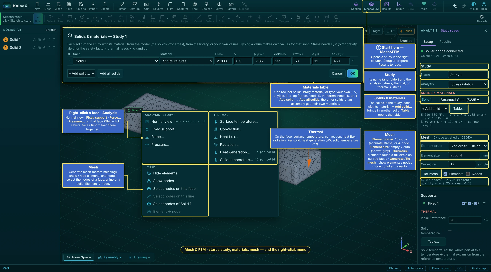
- Click Mesh&FEM (top right). The Analysis panel opens on the right with a Setup and a Results tab; its first line shows whether the solver bridge is connected.
- Study: its Name (a new name = a new study with its own folder) and the Analysis: Stress (static), Thermal (steady state) or Thermal + stress (coupled).
- Solids & materials: the solids in the study, each with its material. + Add solid… brings another solid in (for an assembly). Table… opens the materials table: one row per solid, a library material or your own values for E, ν, ρ, yield, k, α and cp (stress needs E and ν; ρ for gravity; yield for the safety factor; thermal needs k, α and cp). + Add solid… / Add all solids in the table give the other solids of an assembly their own material.
- With several solids, Contacts lists where they touch: Bonded (glued — stress and heat pass fully) or Contact (surfaces may open and slide with friction μ). Find contacts looks for them again.
- Mesh: Element order — 2nd order, 10-node tet (C3D10) is the default and the right choice for stress; 1st order, 4-node tet (C3D4) is much smaller but too stiff in bending (stresses and deflections come out low unless the mesh is very fine — the panel warns); fine for quick checks and heat flow. Element size: empty = automatic (the value is shown grey). Curvature: how many elements go round a full circle on curved faces — more gives a finer mesh round holes and fillets. Generate mesh / Re-mesh; Elements and Nodes show the mesh; below: the node and element count and the element quality (1 = perfect, below 0.1 = poor).
The right-click menu with Mesh&FEM open
- Analysis: Normal view, Fixed support, Force…, Pressure… on the face you clicked. Shift-click several faces (or lines) first to put one support or load on all of them — a force is then shared between the faces by their area.
- Thermal: on the face — surface temperature, convection, heat flux, radiation; per solid — Heat generation… (W) and Solid temperature… (°C).
- Mesh: generate mesh (before meshing), show / hide elements and nodes, select the nodes of a face, a line or a whole solid, Element → node (below).
Supports, loads and temperatures
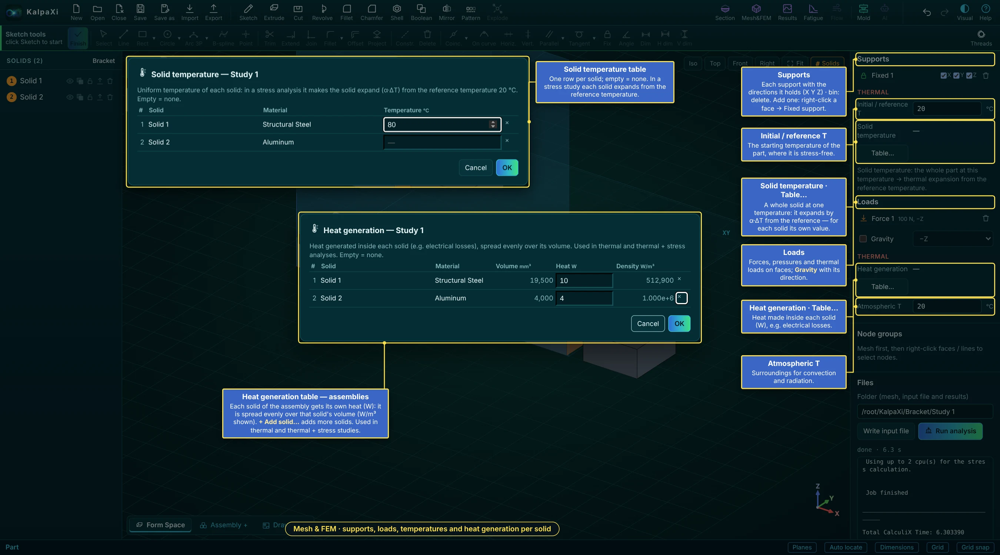
- Supports: right-click a face → Fixed support. In the list each support shows the directions it holds — untick X, Y or Z to hold only some (a roller / sliding support); the bin deletes it.
- Loads: right-click a face → Force… (total newtons, along the face normal or ±X/±Y/±Z, spread evenly over the face) or Pressure… (MPa; positive pushes into the face). Tick Gravity and pick its direction to add the parts' own weight. Click a load in the list to change it, or the bin to remove it. Supports show in green, loads as orange arrows.
- Initial / reference T (°C, under Supports → Thermal): the starting temperature of the parts, at which they are stress-free.
- Solid temperature · Table…: a whole solid at one temperature — one row per solid, empty = none. In a stress study each solid then expands by α·ΔT from the reference temperature, so a hot part in a cold frame gets thermal stress.
- Heat generation · Table… (under Loads → Thermal): the heat made inside each solid, in W (for example electrical losses in a coil or a chip). It is spread evenly over that solid's volume; the table shows the volume and the resulting W/m³. In an assembly each solid gets its own value — + Add solid… adds more solids. Used in thermal and thermal + stress studies.
- Atmospheric T: the surroundings, used by convection and radiation unless they give their own T∞.
Thermal analysis, and thermal + stress together
Choose the kind of analysis under Study → Analysis:
| Analysis | What CalculiX solves |
|---|---|
| Stress (static) | Displacements and stresses from supports and loads. A Solid temperature makes the whole part expand by α·(T − reference). |
| Thermal (steady state) | The temperature field and heat flow — no stresses. |
| Thermal + stress (coupled) | Both at once: the computed temperatures expand the material and cause thermal stress, together with your mechanical loads. |
Adding a thermal condition to a stress study (or a support / load to a thermal study) turns it into Thermal + stress automatically.
| Where | Item | Meaning / units |
|---|---|---|
| Supports → Thermal | Initial / reference T | °C — the starting temperature and the temperature at which the part is stress-free. |
| Solid temperature (Table…) | °C per solid — the whole solid at one temperature (stress analysis only). | |
| Loads → Thermal | Heat generation (Table…) | W per solid — heat generated inside each solid (e.g. electrical losses), spread over its volume. |
| Atmospheric T | °C — the surroundings; used by convection and radiation unless they give their own T∞. | |
| Right-click a face → Thermal (or DOF on nodes) | Surface temperature… | °C — the face is held at this temperature. |
| Convection… | h in W/m²K and T∞ °C: q = h·(T − T∞). Still air ≈ 5–25, forced air 25–250, water 500–10 000. | |
| Heat flux… | W/m², positive = into the part. | |
| Radiation… | Emissivity ε (0–1) and T∞ °C: q = ε·σ·(T⁴ − T∞⁴). |
Material thermal properties (conductivity k, expansion α, specific heat cp) come from the material list and are shown under the material.
Thermal results: Temperature (°C) and heat flux (total and X / Y / Z, W/m²) can be plotted; the summary gives the maximum / minimum temperature and maximum heat flux, and Heat flow at fixed temperatures lists the watts going in (+) or out (−) through every surface held at a temperature. Coupled results also have all the stress and displacement plots.
Node groups and loads on nodes
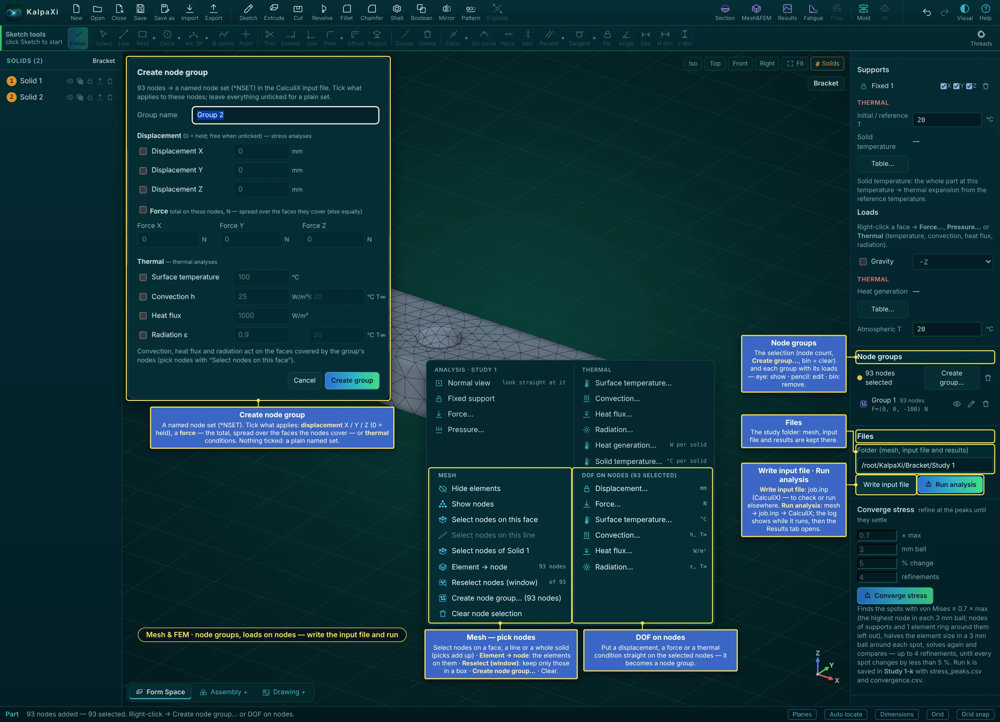
For loads and supports that don't cover a whole face — a patch of a face, a line, part of an assembly — work on the nodes of the mesh. With the part meshed, right-click the model:
| Menu item | What it does |
|---|---|
| Generate mesh / Re-mesh (out of date) | Meshes the solid (also in the panel). |
| Show / Hide elements | Shows the mesh (elements and their edges) or the plain model. |
| Show / Hide nodes | Draws every node on the surface as a small dot. |
| Select nodes on this face | Adds all nodes of the face you right-clicked to the selection (yellow dots, visible through the part). |
| Select nodes on this line | Right-click on (or very near) an edge of the model: adds all nodes along that line. |
| Reselect nodes (window) | Keeps only part of the selection: drag a window (rectangle) on the screen with the left button around the nodes to keep — the nodes outside it are dropped, through the whole depth of the part. Turn the view first so the nodes you want are inside the window. Esc or a right-click cancels. |
| Create node group… (n nodes) | Asks for a group name and saves the selected nodes as a group (purple). It is written into the input file as a named node set (*NSET). |
| Clear node selection | Empties the selection. |
When nodes are selected the menu also shows DOF on nodes:
- Displacement… (mm) — opens the node group window with X, Y and Z ticked at 0 (= held). Untick a direction to leave it free, or type a value to push / pull it (e.g. 0.05). Such a group is a support (green) and its reaction force appears in the results.
- Force… (N) — a total force with X / Y / Z parts (starts at Fz = −100 N) on the selected nodes. On nodes that cover whole faces it is spread as an even traction over those faces; otherwise it is shared equally between the nodes. It counts as a load, so the study can run with only this force.
- Surface temperature… / Convection… / Heat flux… / Radiation… — the same thermal conditions as on faces, applied to the faces covered by the selected nodes (red).
Each opens the node group window: the group name, the displacements (tick a direction and type its value), the force (Fx, Fy, Fz) and the four thermal conditions (tick and type the values; leave T∞ empty to use the atmospheric temperature). Leave everything unticked for a plain named set.
The panel's Node groups list shows each group with its node count and its values (e.g. Ux=0.02 mm, F=(0, 0, −100) N, q=2000 W/m²); the pencil opens the window to change them, clicking a name selects its nodes again, the bin deletes it. Groups remember the faces / lines and the window they were picked with, so they are found again after a re-mesh.
Element groups
With nodes selected, right-click → Element → node selects the elements attached to them. The panel's Element groups section then offers Create element group…: a named element set (*ELSET) with its own heat generation (W or W/m³) and acceleration (along a direction) — added to the solid's own. Each group has an eye (highlight on / off), a pencil (edit) and a bin.
Write the input file and run
- Files → Folder: the study folder, where the mesh, the input file and the results are kept.
- Write input file meshes if needed and writes
job.inponly — to check it or run CalculiX yourself. - Run analysis: mesh →
job.inp→ CalculiX. The solver log shows in the panel while it runs (Stop ends it); when it finishes the Results tab opens.
Where the files go
Each study has its own folder (shown under Files, and editable): <projects folder>/<project>/<study>/ containing model.step (the solid), mesh.msh (Gmsh mesh), job.inp (the CalculiX input file), and the results job.frd, job.dat, job.sta, job.cvg, solver.log. The project itself (<project>.kxi) is saved in the project folder next to it. Write input file only writes job.inp — handy if you want to run CalculiX yourself or check it with CalculiX GraphiX (cgx).
Results
Results (top right) opens the results panel for any study of this project — stress, thermal, coupled or fatigue. The studies are read back from the project folder by the solver bridge, so results are there again after you reopen the project. After Run analysis the results open by themselves.
Looking at a result
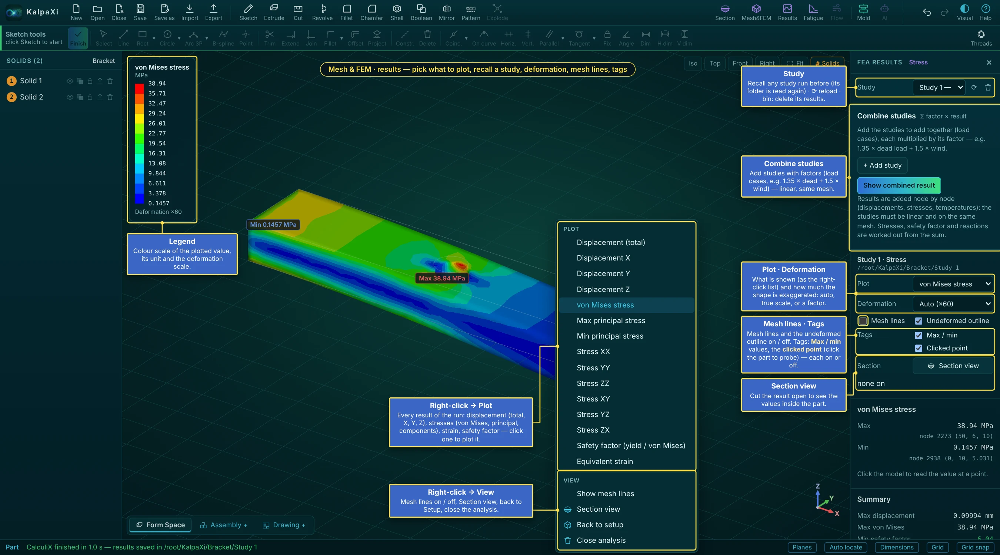
- Plot: displacement (total, X, Y, Z), von Mises stress, maximum / minimum principal stress, each stress component, equivalent strain, the safety factor (yield strength ÷ von Mises), temperature and heat flux (thermal), damage and life (fatigue). Right-click the model for the same list (Plot) and for View: mesh lines on / off, Section view, Back to setup, Close analysis.
- Deformation: Auto (exaggerated so you can see it — the factor is shown), Undeformed, True scale, ×10 / ×100 / ×1000. Mesh lines and Undeformed outline switch the thin lines on and off.
- The legend (top left) shows the colour bands, the unit and the deformation factor. Tags choose which labels are on the model: Max / min, the Clicked point (click the model to probe the value at a node), and — when there are — the fatigue Critical node and the Converge regions. Each can be switched off.
- Section view — cut the result open (up to 4 sections, as in the model): the cut faces show the values inside the part, and the panel shows the range In the section.
- Check the Summary: max displacement, max stress, min safety factor (green when 2 or more), and the Reaction forces at each support (they should balance your loads); thermal: heat flow at every fixed-temperature surface.
The Results column — studies, combinations, export
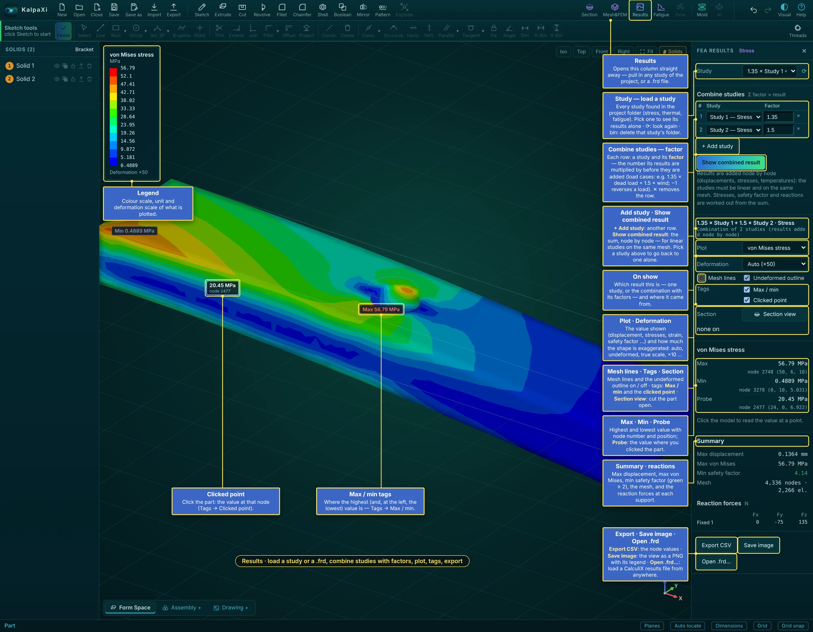
| Item | What it does |
|---|---|
| Study | Loads a study: every study with results in the project folder (stress, thermal, fatigue). Pick one to see its results alone. ⟳ looks for studies again; the bin deletes that study's folder (mesh, input file, results) from disk after you confirm. |
| Combine studies | Adds load cases together. Each row is a study and its factor — the number its results are multiplied by before they are added: e.g. 1.35 × dead load + 1.5 × wind; −1 reverses a load. ✕ removes a row. |
| + Add study · Show combined result | Another row · the sum, node by node, shown like any result (its title lists the factors). Valid for linear studies on the same mesh (not with contact); stresses, safety factor and reactions are worked out from the sum. Pick a study in the Study list to see one alone again. |
| On show | Which result this is — one study, or the combination with its factors — and its folder. |
| Max · Min · Probe | The highest and lowest value with node number and position; Probe: the value where you clicked. |
| Export CSV · Save image · Open .frd… | Every node's values as CSV · the view as a PNG with its legend · load any CalculiX results file. |
- Each study keeps its own folder, so you can compare load cases by switching the Study list. Fatigue uses these stress studies as its load cases.
- Results stay on show while you place a section; close them with ✕ in the panel title.
Converge stress — refine until the stress settles
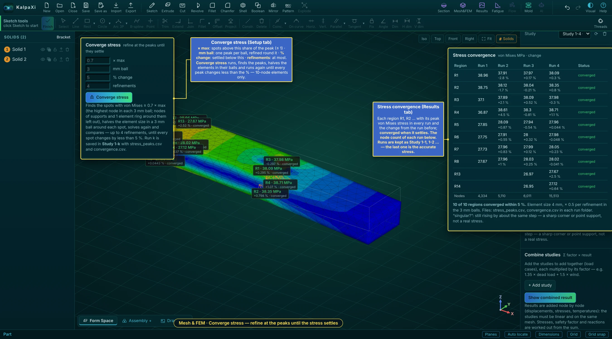
A peak stress depends on the mesh: finer elements at a notch give a higher, truer value until it stops changing. Converge stress (Setup tab, below Files) does this for you, for stress studies with 10-node elements:
- Set × max — spots with von Mises above this share of the peak are followed (≤ 1, default 0.7); mm ball — one peak per ball and the refined zone round it (default 3 mm); % change — settled below this (default 5 %); refinements — at most (default 4).
- Converge stress. Run 1 finds the peaks (nodes of supports and one element ring round them are left out). Each next run halves the element size in the balls round the open spots, solves again and compares — until every spot changes by less than the % or the refinements are used up. Stop converging ends it.
- The Stress convergence table (Results tab) lists each region R1, R2 … with its peak von Mises stress in every run and the change from the run before, the status (converged, not converged, open or singular?) and the node count of each run. Tags → Converge regions marks them on the model.
The runs are kept as Study 1-1, Study 1-2 … (each with stress_peaks.csv and convergence.csv); the last one holds the accurate stress. singular? means the stress still rises by about the same step each run — a sharp corner or a point support, not a real stress.
Fatigue (pyLife)
Fatigue turns the stresses of one or more stress studies into fatigue damage and life with pyLife (Bosch Research, open source, Apache-2.0): Wöhler (S-N) curve, mean-stress correction, rainflow counting and the Palmgren–Miner rule, at every node.
One-time setup (Python and pyLife)
- Install Python 3 (3.10 – 3.14 recommended) from python.org.
- Open the Fatigue panel: its first line shows which Python the bridge found and whether pyLife imports there. If not, it shows the exact commands for that Python, for example (Windows):
py -m pip install numpy scipy "pandas>=2.2"
py -m pip install pylife --no-deps
(--no-depsskips h5py, which KalpaXi doesn't need and which may not build on very new Python versions.) - Press ⟳. If you have several Pythons, set
"python"inbridge/config.jsonto the one with pyLife (e.g."C:\\Python314\\python.exe") and restart KalpaXi / the solver bridge.
Setting up a fatigue study
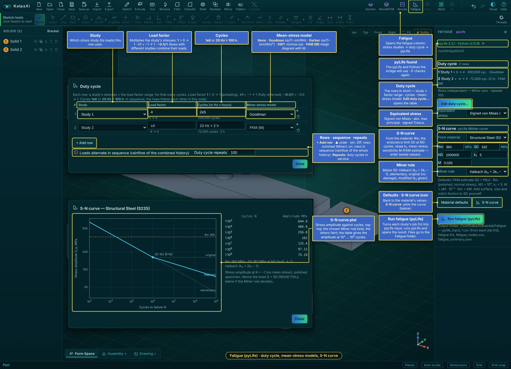
- Run the stress studies for your load cases first (Mesh&FEM → Run analysis), e.g. “Bending” and “Torsion”. Use 2nd-order tets and refine at notches (Converge stress helps).
- Fatigue (top right). The first line shows the pyLife and Python the bridge will use (⟳ checks again). Duty cycle lists the rows in short.
- Edit duty cycle… opens the table. + Add row per load, then for each row:
- Study — which stress study (its loads) the row uses.
- Load factor — multiplies the study's stresses:
1= 0 → 1 (pulsating),±1= −1 → 1 (fully reversed),-0.5/1= −0.5 → 1. - Cycles —
1e6, or20 Hz × 100 h(the life is then also given in hours). - Mean-stress model — None (amplitude only) · Goodman σa,eq = σa / (1 − σm/Rm) · Gerber σa,eq = σa / (1 − (σm/Rm)²) · SWT (Smith–Watson–Topper) √(σmax · σa) · FKM (M) the FKM Haigh diagram with the mean-stress sensitivity M.
- How the rows combine: off — rows independent, Miner sum (D = Σ n/N); on — Loads alternate in sequence (rainflow of the combined history), which also counts the big cycles from one load to the next. Duty cycle repeats: how often the duty cycle is run in service (damage = repeats × one duty cycle). Done.
- Equivalent stress: signed von Mises (default), abs. max principal or signed Tresca.
- S-N curve: From material fills Rm, the endurance limit SD at ND cycles, the slope k₁ and M (FKM estimate) — or type tested values. Miner rule (below SD): Haibach (k₂ = 2k₁ − 1), elementary (k₂ = k₁), original (no damage below SD) or modified (k₂ given). Material defaults puts the estimate back. Apply surface, size and notch factors to SD yourself.
- The S-N curve icon plots the curve: stress amplitude against cycles, log-log, with the chosen Miner rule bold and the others faint, Rm and SD marked, and a table of the allowed amplitude at 10³ … 10⁹ cycles.
- Run fatigue (pyLife): each study's
job.frdis turned into pyLife input, pyLife runs (the log shows progress; Stop ends it) and the result opens.
Fatigue results
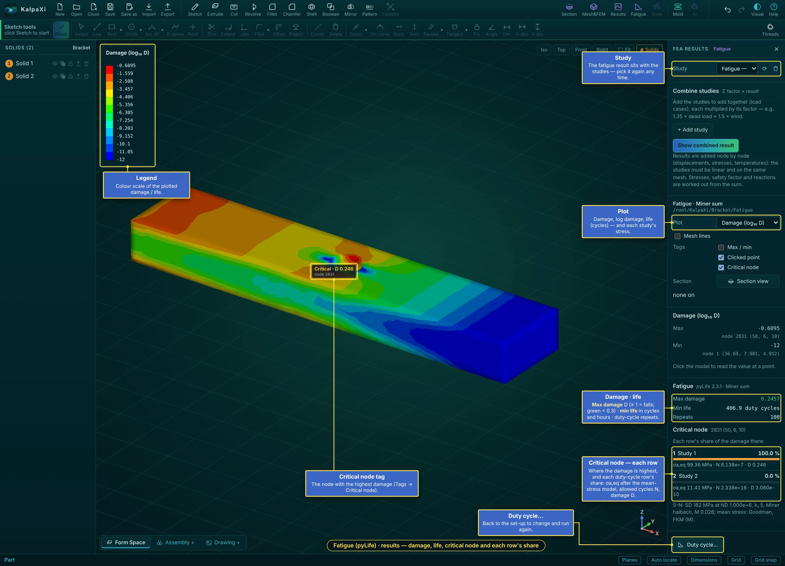
- Plot: damage D, log₁₀ damage, life (log₁₀ duty cycles), and each row's damage and equivalent amplitude σa,eq — with legend, probe, tags and section view like any result. Tags → Critical node marks the node with the highest damage.
- Max damage (≥ 1 = fails within the duty cycles given; green below 0.3), min life in duty cycles (and hours when every row is in Hz × hours), and the repeats.
- Critical node: where the damage is highest, and each duty-cycle row's share there — σa,eq after the mean-stress model, the allowed cycles N and the damage D — so you see which load case to work on.
- The fatigue result appears in the Study list like the other studies. Duty cycle… goes back to the set-up to change it and run again.
- Files in
<project>/Fatigue/:pylife_input_*.csv(stresses from eachjob.frd),fatigue.frd(opens in CalculiX GraphiX too),fatigue_nodes.csv,fatigue_summary.json,fatigue.log.
Molding check (injection molding)
The Mold button (top right, after Fatigue) checks whether a solid can be injection molded, using the
knowledge-based rules of the Injection Molding DFM Rulebook. Every finding names the rule it comes from (e.g. WT-1), so you can look it up in the table below.
The check runs in the background in a second or two, then the panel shows the result and a colour map is drawn on the part.
How to run a molding check — step by step
- Model the part as one solid with its real walls (shell it, add ribs, bosses, holes). Add draft to the walls if you have it — without draft every vertical wall is reported (DR-1).
- Click Mold. Pick the Solid and the Material (resin).
- Opening: leave Propose (KalpaXi tries the main directions and picks the one with the fewest undercuts), or right-click a face → Open the mold along this face's normal. The blue arrow shows it.
- Set Texture, Side actions allowed or not, Cosmetic part, and optionally your own Gates (Place gates… or right-click → Put a gate here).
- The check runs by itself. Go through the colour maps (Thickness, Thick spots, Draft, Undercuts, Features, Fill) and the Findings list — click a finding to see where it is and which rule and source it comes from.
- Change the model (thinner walls, more draft, core out bosses …) and press Run again. Export CSV saves the findings for your molder.
Setting it up
| Setting | What it does |
|---|---|
| Solid | Which solid to check (shown when the model has more than one). |
| Material | 16 molding resins with their wall range, draft, shrinkage and type (amorphous / semi-crystalline, glass-filled, flexible). The line under it shows the values used. |
| Opening | The direction the mold opens (the cavity half moves this way; the core half the other way). Propose tries the X, Y and Z axes and the normals of the large flat faces and picks the one with the least undercut, then the least zero-draft area, then the largest shadow (parting line on the biggest silhouette). Or choose an axis, press Pick a face for the direction, or right-click a face → Open the mold along this face's normal. The blue arrow on the part shows it. |
| Texture | Textured faces need more draft: light 3°, heavy 5°, leather 10°. |
| Side actions | If slides / lifters are not allowed, undercuts and side holes are errors instead of warnings. |
| Gates | Proposed by KalpaXi, or your own: press Place gates… and click points on the part (click empty space to finish), or right-click → Put a gate here. clear goes back to the proposal. |
| Cosmetic | Tick for a visible or glossy part: ribs may only be 40 % of the wall (instead of 60 %) and a sink mark opposite a rib, boss or gusset becomes an error. |
| Resolution | Normal measures about 40 000 surface points; Fine about 120 000, for small features (slower). |
Changing a setting or the model marks the result as out of date (the map is hidden) until you press Run again. The settings are saved in the .kxi project.
Colour maps
| Map | Shows |
|---|---|
| Thickness | Wall thickness at every point: red = thinner than the material minimum (won't fill), purple = thicker than its maximum, blue → green → yellow inside the allowed range. |
| Thick spots | Diameter of the largest ball that fits in the material at each point, compared with the nominal wall: orange > 2 × nominal (sink mark), red > the material maximum (void / sink). |
| Draft | Green / blue = enough draft on the cavity / core side, yellow = less than needed, red = no draft at all, light grey = a curved face the parting line runs across, purple = undercut. |
| Undercuts | Orange = an undercut a straight side action can release, red = one that needs a lifter, insert or redesign. |
| Features | What KalpaXi recognised: ribs (blue), gussets (teal), bosses (orange), holes (yellow), each tagged R1, G1, B1, H1 … on the part. |
| Fill | How the melt fills from the gate(s): blue at the gate → orange where it fills last, red where the flow is longer than the material allows. Drawn on top: the gates (red arrows), weld lines (purple lines, W1 …), the last points to fill (V1 …) and the proposed ejectors (white circles, E1 …). |
Gates, filling and ejection (Release 3)
This is a rule-based estimate, not a mold-flow simulation: it follows the melt along the walls, but not its temperature, pressure or speed. Use it to place gates and spot problems early; confirm critical parts with a flow simulation or your molder.
- Flow length — for every point, the easiest path from the nearest gate, adding up length ÷ wall thickness along the way (so thin walls count more). The largest value is compared with the material's flow ratio L/t (ABS 200, PC 100, PP 250 …).
- Gate proposal — the point with the shortest longest flow (the centre of the part, GT-2), moved into a clearly thicker section if the flow stays well within the limit (GT-1); never on ribs, bosses or holes, or on the show side of a cosmetic part (GT-4). If one gate can't fill within 90 % of the limit, KalpaXi adds gates (up to 4) and lets each fill an equal share (GT-6).
- Weld lines — behind every through-opening (holes, windows, slots in flat walls): where the fill paths of neighbouring points went round opposite sides of it. Between gates: where their regions meet. The part where the two flows meet at more than 45° is reported as visible (WL-4). A weld line on a boss, or on the show side of a cosmetic part, is a warning (WL-1).
- Stress at weld lines (WL-2) — if stress results of the same solid are loaded (Stress → Results), the von Mises stress along each weld line is compared with 75 % of the material's yield strength (50 % for glass-filled resins).
- Last to fill (GS-1) — the points that fill last. On the outside edge the air leaves through the parting line (info); at the top of a rib or boss, or where fronts meet inside the part, it is a gas trap that needs a vent or an ejector pin (warning).
- Ejection — the part shrinks onto the half that has its cores (inside walls); ejectors push from that half. KalpaXi proposes a 3–8 mm pin on a flat spot within 10 mm (or 1.5 × the height) of every rib, boss and deep core wall, an ejector sleeve for a boss whose top faces the ejection side, and a blade on a rib top that has no flat spot nearby (EJ-3). Parts without such features get at least two pins, spread out. These distances and the minimum of two pins are KalpaXi's starting values (the rulebook has no published numbers).
- Warp — flat panels whose unsupported span is more than 50 × the wall (WP-3, KalpaXi's starting value); symmetric parts gated off the symmetry plane (WP-4).
Ribs, gussets, bosses and holes
The Features list in the panel shows every recognised feature with its size (e.g. “Rib 1.2 mm thick, 6 mm high on a 2 mm wall”, “Boss ⌀8 × 10 mm, hole ⌀3 mm”) and how many warnings it has; click one to highlight it. Findings about a feature start with its label.
- Rib — two flat faces facing away from each other, closer than 2.5 × the nominal wall, joined by a free top face and both standing on the part (inside corners at the root). The outer wall of a box is not a rib (its outside has no root). The thickness is measured at the wall surface (past any root fillet), the height from the top to the wall.
- Gusset — the same thin web, with its free edge sloping between two supports that are not parallel (a floor and a wall).
- Boss — a round post (cylinder or drafted cone) all the way round one axis, standing on a wall at one end and free at the other. A hole on the same axis is its screw hole.
- Hole — a round hole all the way round one axis, smaller than half the part across it; through or blind (a floor at one end). Partial cylinders such as fillets and slot ends are not holes.
Sink marks (SK-1) are drawn on the face opposite the root of a too-thick rib, gusset or boss — that is where they will show.
Click the part to read the wall thickness, ball diameter and draft angle at that point. Right-click shows the opening-direction and map commands.
Findings
Errors (can't be molded as drawn), warnings (a defect is likely) and info (advice, clamp force, mold shrinkage). Click a finding to highlight it on the part and see the rule text and its source. Export CSV saves the list. Below the findings: the opening direction, nominal / thinnest wall, thickest section, undercut and projected area, depth, clamp force and volume, and — when the direction was proposed — how the candidate directions compared.
How it measures
- Wall thickness — from each surface point a ray goes straight into the part to the far side. Where that ray runs along a wall (the side of a plate, the top of a rib, the wall of a hole), the shortest chord across the wall is used instead.
- Thick spots — the largest ball that touches the surface at the point and stays inside the material (the "rolling ball" method).
- Draft — the angle between each face and the opening direction. Undercuts — surface points that can't see out of the part along the opening direction on their own side; each undercut is then tested along 8 sideways directions to find a side action that frees it.
- Corners — an edge where the faces meet at more than 20° has no fillet (inside = concave). Inside fillet radii come from how fast the surface normal turns.
Rules checked in this release
| Rule | Check | Severity | Source |
|---|---|---|---|
| WT-1 | Wall thinner than the material minimum | Error | Protolabs, MoldMinds |
| WT-2 · VD-1 | Section thicker than the material maximum (largest ball) | Warning | Protolabs, MoldMinds |
| WT-3 · WP-2 | Thickest ÷ thinnest wall > 1.5 (1.2 glass-filled), faces with ≥ 5 % of the area | Warning | MoldMinds |
| WT-6 · SK-2 | Thick spot > 2 × nominal wall | Warning | RJC Mold, Protolabs |
| WT-7 | Walls under 1.0 mm (thin-wall molding) | Info | MoldMinds |
| DR-1 | Face parallel to the opening with 0° draft (nylon: info) | Error | Fictiv, Protolabs |
| DR-2 | Draft below the material / texture minimum | Warning | Fictiv, Protolabs |
| UC-1 · DR-4 | Surface hidden from the opening direction (undercut / negative draft); side-action direction suggested | Warning (Error if side actions not allowed) | Protolabs |
| UC-3 | Bump-off possible for flexible resins (LDPE, TPE / TPU) | noted on UC-1 | Protolabs |
| UC-7 | Number of side actions needed | Info | Protolabs |
| CR-1 | Sharp inside edge, or inside fillet radius < 0.5 × nominal wall | Warning | Protolabs |
| CR-2 | Sharp outside edges (outside radius = inside + t) | Info | Covestro |
| WP-1 | Semi-crystalline resin (shrink > 1 %) with non-uniform walls | Warning | MoldMinds, Protolabs |
| WP-6 | Mold scale factor from the resin's shrinkage | Info | RJC Mold, MoldMinds |
| TL-3 | Part size, volume, projected area and depth vs. typical rapid-tooling limits | Info | Protolabs |
| TL-4 | Clamp force estimate from the projected area | Info | MoldMinds |
| Release 2 — features | |||
| RB-1 · SK-1 | Rib base thicker than 60 % of its wall (40 % cosmetic) — sink on the opposite face | Warning (Error cosmetic) | Xometry |
| RB-2 | Rib taller than 3 × its base thickness | Warning | Xometry, Covestro |
| RB-3 | Rib draft below 0.5° per side (info above 1.5°: thin top) | Warning | Xometry, Covestro |
| RB-4 | Rib / gusset root radius outside 0.5–1 × wall (sharp root included) | Warning | Xometry |
| RB-5 | Gap between parallel ribs under 2.5 × wall (2 × for ribs lower than 3 × wall) | Warning | Xometry, Covestro |
| GU-1 · SK-1 | Gusset thicker than ⅔ of the wall it joins | Warning (Error cosmetic) | Covestro, Protolabs |
| GU-2 | Rib with free-standing ends | Info | Xometry |
| BS-1 · SK-1 | Boss wall over 60 % of the nominal wall, or a solid boss | Warning (Error cosmetic) | HLH, Protolabs |
| BS-2 | Boss taller than 3 × its diameter (over 5 × = error) | Warning / Error | HLH, Covestro |
| BS-3 | Boss draft outside under 0.5°, hole under 0.25° (bosses along the opening) | Warning | HLH |
| BS-4 | Base radius under 0.25 × wall (sharp base or sharp hole bottom); info above 0.5 × | Warning | HLH |
| BS-5 | Bosses closer than 2 × wall | Warning | HLH |
| BS-6 | Solid plug under a boss hole (not cored down to the wall) | Warning | Covestro |
| BS-7 | Free-standing boss (no rib, gusset or wall tied to it) | Info | HLH |
| BS-8 | Boss and hole diameters to check against the screw maker's chart | Info | Covestro |
| HL-1 | Hole deeper than blind 2 D / 3 D (D under / over 5 mm), through 4 D / 6 D; over 12 D = error | Warning / Error | PlasticsToday, Wevolver |
| HL-2 | Less material than 1.5 × wall and 1.5 × D to the next hole or the edge | Warning | Wevolver |
| HL-3 | Floor under a blind hole thinner than 0.2 × D | Warning | Wevolver |
| HL-4 | Hole not along the opening (side hole) | Info (Error without side actions) | Envalior |
| HL-5 | Weld line behind every cored hole | Info | Envalior |
Rib and boss roots, and the draft of ribs and bosses, are judged by their own rules (RB-3 / RB-4, BS-3 / BS-4) instead of the general corner and draft rules, so they are not reported twice. Not checked: RB-6 (tapered rib thickness changes).
| Release 3 — gates, filling, ejection, warp | |||
|---|---|---|---|
| Rule | Check | Severity | Source |
| FL-1 · GS-2 | Longest flow ÷ wall above the material's L/t (short shot; GS-2 when the last area is a thin rib) | Error | MoldMinds, Daya Machinery |
| FL-2 | Flow above 80 % of the limit | Warning | MoldMinds |
| GT-1 · VD-2 | Gate in a thin wall while the part has much thicker sections | Warning | Autodesk Moldflow |
| GT-2 | Your gate gives more than 1.25 × the flow of a central gate | Info | Autodesk Moldflow |
| GT-3 | Long, narrow part (over 4 : 1): consider a gate at one end | Info | Autodesk Moldflow |
| GT-4 | Gate on a rib, boss or hole, or on the show side of a cosmetic part | Warning | Autodesk Moldflow |
| GT-6 | More than one gate needed (KalpaXi proposes them) | Info | Autodesk Moldflow |
| WL-1 · GT-5 | Weld line on a boss (screw load) or on the show side | Warning | Autodesk Moldflow |
| WL-2 | Stress at a weld line above 75 % of yield (50 % glass-filled), from the stress results | Warning | Covestro |
| WL-3 · GS-1 | Gas trap: last to fill at a rib / boss top or where fronts meet inside — vent it | Warning (Info on the outside edge) | Moldflow, Protolabs |
| WL-4 | Weld line with its visible length | Info | Covestro |
| WL-5 | Through-hole at the centre: a diaphragm gate avoids the weld line | Info | Covestro |
| EJ-1 | A rib, boss or deep core wall with no flat landing spot nearby (and a summary of the proposed ejectors) | Warning | Fictiv, Protolabs |
| EJ-2 | Cosmetic part: pin marks show on the ejection half | Info | Protolabs |
| EJ-3 | Ejector sleeves for bosses, blades for ribs | Info | Fictiv |
| EJ-4 | Pins landing on angled or curved faces | Info | Protolabs |
| EJ-5 | Soft or sticky resin (TPE, TPU, PP, PE): more or wider pins | Info | Protolabs |
| WP-3 | Flat panel span ÷ wall over 50 | Warning | RJC Mold (limit: KalpaXi) |
| WP-4 | Symmetric part, gating not symmetric | Info | Autodesk Moldflow |
| WP-5 | Sharp inside corners also add curl and warp (shown with CR-1) | — | Protolabs |
Flow ratios L/t used: ABS 200, PC/ABS 130, PC 100, PP 250, HDPE / LDPE 230, PS 200, PA 200, PA glass-filled 130, POM 150, PMMA 130, PBT / PET 180, TPE / TPU 140 (MoldMinds). PP glass-filled (200), PBT glass-filled (130) and PPS (150) are KalpaXi's starting values — no published figure was found. Your resin's spiral-flow data always wins.
Not checked: weld lines behind blind cores and openings in curved walls, snap fits, living hinges, threads and text (SF, LH, TH, TX), tolerances (TL-1, TL-2).
Sources
- Protolabs — Injection molding design guidelines (draft, size limits)
- Protolabs — Improving part design with uniform wall thickness
- Protolabs — Cutting corners on injection-molded parts
- Protolabs — 6 ways to achieve undercut success
- Protolabs — Designing for moldability: complex features
- Fictiv — Draft angle in injection molding
- MoldMinds — Wall thickness guide by material
- RJC Mold — Wall thickness design, Defects and solutions, Shrinkage rates
- Covestro — Engineering Polymers: Part and Mold Design guide
- Xometry — Plastic ribs for injection molding design
- Autodesk Moldflow — Design rules of polymer injection locations
- Covestro — Understanding and optimizing weld lines
- Daya Machinery — Flow length ratio of common plastics
- Protolabs — Using ejector pins properly, Fictiv — Ejection systems design guide
- HLH — Bosses design guide
- PlasticsToday — Depth of holes (Beall), Wevolver — Injection-molded holes, Envalior — Holes
The full rulebook (all rules including Releases 2–3, with the 26 references and noted gaps) is the "Injection Molding DFM Rulebook" document.
Flow and AI (frozen)
Flow (CFD) — SU2 input files
The Flow button (top right) sets up a steady, incompressible flow of air, water or oil and writes the input files for the open-source CFD solver SU2: the fluid mesh mesh.su2 and the case file case.cfg. Meshing uses Gmsh through the solver bridge, like the stress analysis. SU2 itself is only needed to run the files; the panel shows whether the bridge found it.
Two kinds of flow
| Flow | Fluid region | Boundaries |
|---|---|---|
| External — air or water round a part | A wind-tunnel box round the chosen solid, with the solid taken out. Its size is set in part lengths L: Upstream (2 L), Downstream (5 L), Sides (2 L). | Automatic: inlet on the upstream face (uniform speed), outlet downstream (0 Pa), farfield slip walls on the four sides, wall (no-slip) on the part. Choose the Flow direction (±X/±Y/±Z) or right-click a face → Flow along / against this face's normal. |
| Internal — flow through channels, pipes, manifolds | The chosen solid is the fluid: model the hollow inside as a solid (a Boolean Subtract of the part from a block, kept as a New solid, gives exactly this). | Right-click a face of the fluid → Inlet (velocity)… (m/s, into the fluid, normal to the face), Outlet (pressure) (Pa, gauge) or Symmetry (slip wall). Every other face is a no-slip wall. Values can be changed in the panel's list. |
Fluid and turbulence
Pick a fluid (air or water at 20 / 60 °C, SAE 30 oil) or type your own density (kg/m³) and viscosity (Pa·s). The panel shows the Reynolds number Re = ρUL/μ (L = part length for external flow, the smallest size of the fluid region for internal flow) and says whether the flow is likely laminar or turbulent. Turbulence: Laminar, Spalart–Allmaras or k-ω SST. With a turbulence model it also shows an estimate of the first-cell y+; these models want y+ ≈ 1 at the walls.
Mesh
Generate fluid mesh makes first-order 4-node tetrahedra (CFD codes use cells without mid-side nodes). Cells are small at the walls (Wall cell size) and grow by about 20 % per cell to the Far-field size (external) or Core cell size (internal); both are automatic unless you type them. The table under the mesh lists every boundary with its type, number of faces and area — check it before writing the files. Right-click → Hide / Show the fluid mesh.
Writing and running
- Set the Iterations limit (SU2 stops earlier when the drag — external — or the pressure drop — internal — has settled) and the Folder.
- Write SU2 files saves
case.cfgandmesh.su2there (withdomain.step,domain.geoanddomain.msh). Download gives the two files without the folder. - Run SU2 in that folder:
SU2_CFD case.cfg. Results:flow.vtuandsurface_flow.vtu(open in ParaView),history.csv(residuals, drag CD and lift CL on the walls, average pressures and the pressure drop between inlet and outlet).
The mesh is written in metres and the case in SI units (Pa, m/s, kg/m³). Force coefficients use the part's frontal area (external) or the inlet area (internal) as reference area.
Menus, files, keys, troubleshooting and credits.
Right-click menus
| Right-click on… | Menu |
|---|---|
| An edge of the solid | Fillet, Chamfer |
| A flat face | New sketch on this face, Normal view, Create a plane…, Extrude this face, Cut into this face, Move the solid, Boolean with another solid (with several solids), Cut another solid with this face's plane…, Properties, Face colour, Solid colour (that solid only). The title shows the solid, e.g. “Face · Solid 2 · Bracket”. |
| A curved face | Create a plane…, Normal view, Face colour, Solid colour |
| A datum plane (XY / XZ / YZ or your own) | New sketch on that plane, Normal view, Cut a solid with this plane… (Cut by surface); Delete this plane (your own planes); Show all solids when some are hidden |
| A solid in the Solids list | Rename…, Hide / Show, Make transparent, Lock / Unlock, Save as / Export…, Delete |
| A part in an assembly deck | Move, Normal view, Section view |
| A drawing view | Show / Hide hidden lines, Section — horizontal / vertical cut, Flip the looking direction (sections), Detail view, Delete view |
| A drawing dimension / note | Text / tolerance…, arrows inside / outside / automatic, Text back in place, Delete; notes: Edit text…, Put back above the parts list |
| The model, while Mesh&FEM is open | Fixed support, Force…, Pressure…, Thermal (surface temperature, convection, heat flux, radiation), Mesh (generate, show elements / nodes, select nodes on this face / line, Reselect nodes (window), create node group, clear) and DOF on nodes (Displacement…, Force…, thermal) |
| Empty space in an assembly deck | Pull component…, Section view, Fit view, standard views |
| A deck tab (bottom left) | Rename…, Delete this deck |
| During a section, shell or joint step | That step's commands, e.g. Set section plane, Done, Cancel |
| Empty space | New sketch, Extrude, Cut, Revolve, Fillet, Chamfer, Boolean (Combine / Subtract / Cut by surface)…, views, undo/redo, save, export |
| The part, while the molding check is open | Open the mold along / against this face's normal, Reverse the opening direction, Let KalpaXi propose the direction, Put a gate here, Clear my gates, the colour maps (incl. Features and Fill), Run again, Close |
| Anywhere while sketching | All drawing, editing, constraint and dimension commands, and Finish sketch |
Right-dragging pans (or turns the view while sketching or in a step) — the menu only opens on a click.
Saving, opening, exporting
| Button | What it does |
|---|---|
| Save Ctrl+S | Saves the project as a .kxi file (the full editable history). After a Save as into a chosen folder, Save writes to that same file again; otherwise it downloads. |
| Save as Ctrl+Shift+S | Opens the Save as / Export window (below): file name, folder, file type .kxi or STEP, and whether to save the whole model or one solid. |
| Open | Loads a .kxi file. The file window's type list has KalpaXi project (*.kxi) and All files. |
| Close | Closes the current project and leaves an empty, untitled model (asks first if there are unsaved changes). |
| Export | STEP (exact solid for other CAD programs), STL (3D printing), DXF (the selected sketch, for laser/CNC), PNG (picture of the view). |
| Import | A menu with the two file types: • KalpaXi project (.kxi) — open it for editing (replaces the current project); • KalpaXi project as a solid — rebuild that project and add its solid to the current model; • STEP (.step / .stp) — add a STEP solid to the current model. |
| New | Starts an empty project. A window asks for the Project name and where to keep it — Choose folder…, as in Save as. With a folder, the project file is created there at once and Save keeps writing to it; without one, Save downloads the file. |
| Section | Section view — see Section view. |
| Mesh&FEM | Mesh, supports, loads, run CalculiX — see Mesh & FEM. The analysis tools are greyed out inside an assembly deck or a drawing. |
| Results | Plot the results of any study — see Results. |
| Fatigue | Damage and life with pyLife — see Fatigue. |
| Mold | Molding check — see Molding check. |
| Flow AI | Frozen for now (greyed out) — see Flow and AI. |
The Save as / Export window
Open it from the Save as button, from right-click on a face → Save as / Export… (that solid is pre-selected, as STEP), or from the export icon next to a solid in the Solids list.
| Field | Meaning |
|---|---|
| File name | Name without extension; the line at the bottom shows the final file name. |
| Save as type | KalpaXi project (*.kxi) or STEP (*.step). |
| Contents | Whole model or one solid (Solid 1, Solid 2, …). A whole-model .kxi is fully editable. A single solid saved as .kxi holds that solid as fixed (imported) geometry with its material — not its sketches. |
| Save in | Choose folder… picks the folder (Chrome and Edge; the browser asks once to allow editing files there). Without a folder, or in Firefox / Safari, the file goes to the browser's download folder — turn on “Ask where to save each file” in the browser settings to be asked every time. |
Solid numbers
Every separate solid gets a number, shown as an orange tag on the model and in the Solids list under the feature tree. A solid keeps its number when you edit, rebuild, save and reopen; a new solid gets the next number (several new ones are numbered left to right). Click a solid in the list for its properties; the # Solids button at the top right of the view hides or shows the tags.
Each row of the Solids list has five buttons: eye — hide / unhide the solid; two squares — transparent / opaque; padlock — lock (see Solids); arrow — Save as / Export; bin — delete the solid. Right-click a solid in the list for the same commands and Rename…. A hidden solid can't be clicked in the view (its number tag turns grey); bring it back with its eye button or right-click empty space or a plane → Show all solids. Hiding and transparency only change the view — the solid is still part of the model, its mass and its exports — and they are saved in the project.
Deleting a solid
Click the bin button of a solid in the Solids list (or right-click it there → Delete). A locked solid must be unlocked first. A warning window lists every feature that will be removed — the extrudes, revolves, imports, cuts, fillets, chamfers and moves that build that solid, and the sketches they use — and asks you to confirm with Delete (Cancel or Esc keeps everything).
- A fillet or chamfer that also rounds edges of other solids is kept; only this solid's edges are taken out of it.
- A cut that also cuts other solids is kept.
- If one extrude built this solid and another one (for example one sketch with two separate shapes), the window warns that the other solid will be deleted too.
- A sketch is deleted only when nothing else uses it.
- The other solids keep their numbers. Undo (Ctrl+Z) brings everything back.
- Solids from a Boolean: deleting a kept original switches off its Keep option in that Boolean (the Boolean uses it up). Deleting a Boolean's result deletes the Boolean feature when both originals were kept; otherwise the Boolean is marked “result deleted” (its panel has Bring back). A solid made by a New solid extrude goes with that extrude and its sketch.
Keyboard shortcuts
| Anywhere | |
|---|---|
| Ctrl+Z / Ctrl+Y | Undo / redo |
| Ctrl+S | Save project |
| Ctrl+Shift+S | Save as / Export… |
| F | Fit view |
| F1 | This help |
| Esc | Cancel / clear selection / close menu |
| Middle mouse click | Finish / Done of the current step (sketch, depth, move, edges, shell, plane, section, part move) |
| Enter | Finish / Done of the current step |
| Part mode | |
|---|---|
| K | New sketch (on the selected face/plane, if any) |
| E | Extrude |
| Del | Delete the selected feature |
| Drawing | |
|---|---|
| Del | Delete the selected view, dimension, note or parts list |
| Esc | End the current tool |
| Wheel · right / middle drag | Zoom · pan the sheet |
| Assembly deck | |
|---|---|
| Del | Remove the picked component from the deck |
| Esc | Deselect; cancel a joint or a move |
| Shift while dragging | Turn instead of slide (cylindrical, planar joints) |
| Sketch mode | |
|---|---|
| S L R C A B P | Select, Line, Rectangle, Circle, Arc, B-spline, Point |
| X W J U | Trim, Extend, Join corner, Project |
| D N Shift+H Shift+V | Dimension, Angle, Horizontal / Vertical dimension |
| H V E T O | Horizontal, Vertical, Equal, Tangent, On curve |
| G | Construction on/off |
| Del | Delete selection |
| Enter | Finish a B-spline |
| Ctrl+Enter | Finish the sketch |
When something goes wrong
| Message / problem | What to do |
|---|---|
| "The sketch has no closed profile" | The shape has a gap. Look for an end point that isn't joined — drag it onto the neighbouring point, or use Join corner. Closed areas are shaded blue. |
| "That would conflict with existing constraints" | The new rule contradicts another one (e.g. a locked length). Unlock or delete the other dimension first. |
| Red constraint markers | The sketch can't be solved — remove one of the red constraints listed in the panel. |
| "OpenCascade could not create this fillet" | The radius is too large for that edge — try a smaller size or fewer edges. |
| A feature shows a ⚠ in the Model list | Click it to read the reason in the panel. Often an earlier sketch changed — edit the feature or re-pick its edges. |
| "The shell can't be made with … walls" | The inside walls would run into a hole, pocket or round. Use a thinner wall, or switch off that feature. |
| "… belongs to Solid N, which is locked" | Unlock the solid with its padlock button in the Solids list. |
| "… is already placed by …" (assembly) | A part can have one placing joint. Delete that joint first, or pick another part to move. |
| Part of the model is missing | A section may be on: open Section and untick it (or All off). |
| "The cutting surface doesn't pass through the solid" / "… must form one open chain" | Cut by surface: move the plane or line so it crosses the part; the sketch must have one open line chain (no closed outline, no branch). |
| "pyLife does not import in …" (Fatigue) | Run the two pip install commands the panel shows — for that Python, with --no-deps — then ⟳. Or set "python" in bridge/config.json to the Python that has pyLife and restart. |
| "The solver bridge is not running" | Start KalpaXi with KalpaXi.bat / kalpaxi.sh (or npm run solver) and keep its window open. |
| "Add a load first" / "Add a support first" | A stress study needs at least one support (a face or a node group with a displacement) and one load (force, pressure, gravity, a node-group force, or a temperature). |
| The model disappeared | Press F (Fit) or click Iso. In a deck, check the component isn't hidden. |
Open-source acknowledgements
Inside KalpaXi (shipped with the app)
| Project | What it does here | Licence | Licence text |
|---|---|---|---|
| Open CASCADE Technology (as WebAssembly by replicad-opencascadejs) — © Open Cascade SAS and contributors | The 3D geometry kernel: solids, Booleans, cuts, fillets, shells, STEP, drawing projections | LGPL-2.1 | LGPL-2.1 |
| replicad — © 2023 QuaroTech Sàrl (Steve Genoud) | The modelling library on top of OpenCascade | MIT | MIT |
| PlaneGCS — FreeCAD's 2D constraint solver, © the FreeCAD contributors, packaged by Salusoft89 | Sketch constraints and dimensions | LGPL-2.0+ | LGPL-2.1 |
| three.js — © 2010–2026 three.js authors | The 3D view, picking and labels | MIT | MIT |
| opentype.js — © 2020 Frederik De Bleser | Reading fonts (used by replicad) | MIT | MIT |
| flatbush and flatqueue — © Vladimir Agafonkin | Fast spatial search (used by replicad) | ISC | flatbush, flatqueue |
| tiny-inflate — © Devon Govett; String.prototype.codePointAt — © Mathias Bynens | Helpers used by opentype.js | MIT | tiny-inflate, codePointAt |
| Montserrat font — © The Montserrat Project Authors | Lettering of the logo tagline on the start-up picture | SIL OFL 1.1 | OFL-1.1 |
OpenCascade and PlaneGCS are used unmodified, as separate WebAssembly files that can be replaced by another build of the same library; their source code is at the links above.
Programs KalpaXi works with (you install them)
| Program | What it does here | Licence | Licence text |
|---|---|---|---|
| CalculiX (ccx) — © Guido Dhondt | The FEA solver: stress, thermal, coupled | GPL-2.0 | GPL-2.0 |
| Gmsh — © Christophe Geuzaine and Jean-François Remacle | The tetrahedral mesher (Mesh, Flow) | GPL-2.0+ | GPL-2.0 |
| pyLife — © Robert Bosch GmbH and the pyLife authors | Fatigue: Wöhler curve, rainflow, mean stress, Miner | Apache-2.0 | Apache-2.0, NOTICE |
| NumPy, SciPy, pandas | Numbers and tables for the fatigue script | BSD-3-Clause | at each project |
| Python · Node.js | Run the fatigue script · run the solver bridge | PSF · MIT | at each project |
| FreeCAD (optional — brings CalculiX and Gmsh) | — | LGPL-2.0+ | freecad.org |
| SU2 (Flow — frozen) | CFD solver for the written case files | LGPL-2.1 | su2code.github.io |
Built with Vite (MIT) and TypeScript (Apache-2.0); tested with Playwright (Apache-2.0). The full list with versions is in THIRD-PARTY-NOTICES.md in the KalpaXi folder.
Why this matters — and what you can do
- Free to use, study, change and share. These licences let anyone — students, small workshops, big companies — use world-class engineering software without licence fees.
- Keep the notices. If you pass KalpaXi on, keep the
licensesfolder andTHIRD-PARTY-NOTICES.mdwith it. If you change OpenCascade or PlaneGCS, share your changes under the LGPL; if you bundle CalculiX or Gmsh, include their GPL text and source link. - Give back. Star, cite, report a bug, write documentation, answer a question in a forum, or sponsor a project you rely on.